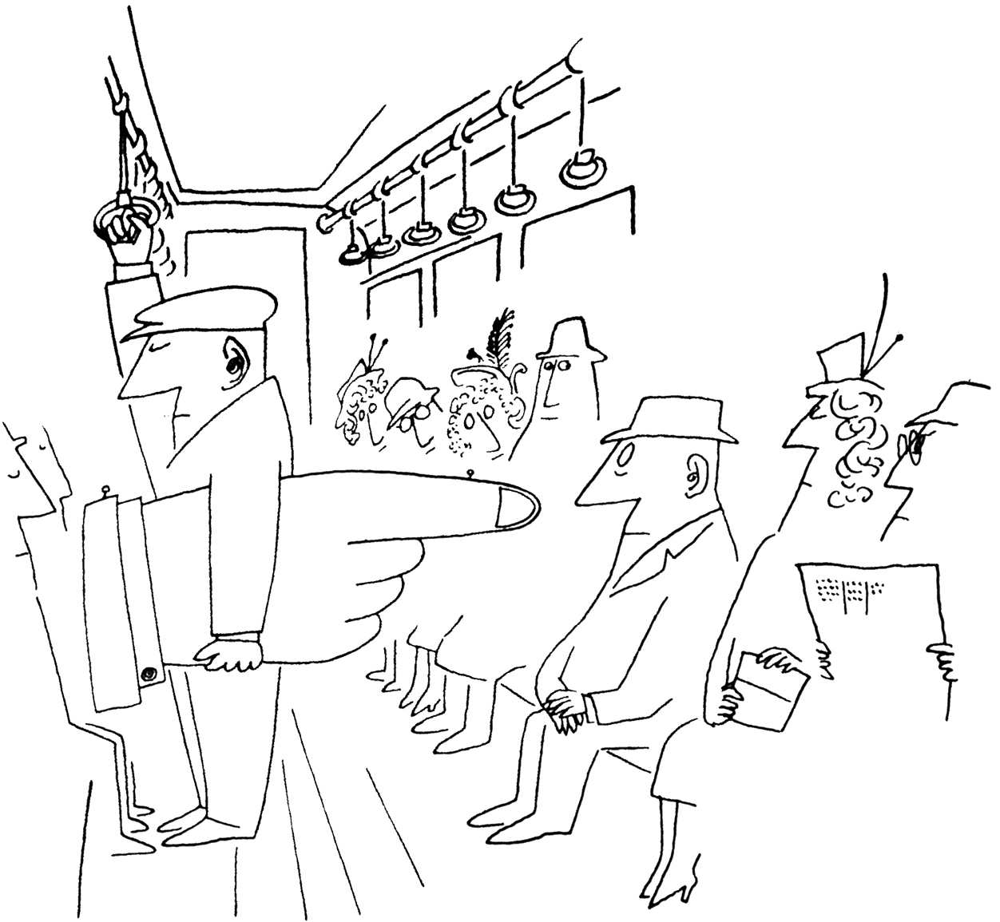

本图来源于《生活艺术》1949年。
Saul Steinberg，Untitled drawing，ink on paper.
Published in Steinberg，The Art of Living，1949.
©The Saul Steinberg Foundation/Artists Rights Society（ARS），New York
当我还是一个年轻的教授时，我听到瑟古德·马歇尔（Thurgood Marshall）在电台接受采访，他讲了一个对我影响很大的故事。当马歇尔还是一名年轻的律师时，曾经为全国有色人种进步协会（NAACP）工作，他被派往南方的一个小镇，为一名被指控犯有严重罪行的黑人辩护。当他到达时，得知被告已经被愤怒的白人暴徒用私刑处死，他感到震惊和沮丧。马歇尔怀着沉重的心情回到火车站，等待返回纽约的火车。等车的时候，他意识到自己饿了，注意到站台上有一个小食品摊。走到摊位前，他盘算着是直接走到前面点一个三明治（这是他的合法权利），还是绕到看台后面（这是当时南部非洲裔美国人的常见做法）。但当他走到摊位前时，一个高大魁梧的白人向他走来，这个白人满眼狐疑地看着他。马歇尔把他看成了某种类型的治安人员，因为他走路的样子颇具权威的神气，裤子口袋里有一个鼓起的东西，极像手枪。
“嘿，孩子，”那人对马歇尔喊道，“你在这里干什么？”“我在等火车。”马歇尔回答。
那人皱着眉头，走近几步，凶狠地瞪着他说：“我没听见你说的话。你说什么，孩子？”
马歇尔意识到自己最初的回答不够恭敬。
他说：“对不起，先生，我在等火车。”沉默了很长时间，那人上上下下仔细地打量了一下马歇尔，然后说：“你最好尽快赶上火车，孩子。因为在这个镇上，太阳从来没有落在一个活着的黑鬼身上。”
正如马歇尔后来回忆的那样，在那一刻，他关于如何得到三明治的盘算被证明太过书生气了。他决定不吃什么三明治了，而是抓紧赶上最快一班火车离开——不管它开往哪里。而且，不知何故，他也不再感到饥饿了。1
瑟古德·马歇尔后来成为全国有色人种进步协会的首席顾问。1954年，他在美国最高法院就布朗诉教育委员会一案进行了辩论。他的胜诉结束了公立学校种族隔离的合法化。随后，马歇尔被任命为最高法院法官，他在最高法院任职，直到1991年退休。我不知道那个口袋里鼓鼓的人后来怎么样了。
什么是偏见？
偏见是人类经验中最常见和最令人不安的固定习惯之一，但人们对它却知之甚少。许多白人认为，马歇尔的故事代表了过去，现代社会已经发展到了“后种族”、“去肤色”和公正的时代。毕竟，我们选举了一位黑人总统；奥普拉（Oprah）、碧昂丝（Beyoncé）和勒布朗（LeBron）是如此成功，几乎可以说是无人不知；现在几乎禁止使用“N”开头的那个单词。因此，在接受调查时，许多人说，我们不必再担心是否有保护弱势少数民族免受偏见和歧视的政策；事实上，如果我们变得过于敏感，就过于“政治正确”了。2在2013年，社会上展开的不仅仅是一场学术辩论。那一年，最高法院废除了1964年《选举权法案》中的重要保护条款，使得各州禁止非洲裔美国人投票成为非法，歧视成了争论的焦点。3
毫无疑问，我们有很多值得庆祝的进步：巴拉克·奥巴马的当选在瑟古德·马歇尔时代是不可想象的，当时有色人种和女性都被限制在附属的角色中，而异族婚姻也被法律禁止，男同性恋和女同性恋被认为是“变态”或是精神病患者，在一些州可能会被监禁，私刑在南部各州仍被用来恐吓黑人。20世纪60年代进行的调查发现，白人迫切希望最大限度地与非裔美国人保持距离——近80%的人说，如果黑人家庭搬进来，他们会搬出自己的社区。今天，84%的白人对异族婚姻感到满意，异族夫妇的数量在稳步上升。4
然而，尽管取得了这些进展，但没有任何社会心理学家相信人类可以是“后种族化”，或者像脱掉大衣那样简单地摆脱他们的偏见。正如我们将看到的那样，偏见是人类生存条件的基础。在一个非常真实的意义上，我们是为偏见而生的。因为偏见存在于所有的文化中，所以有理由得出这样的结论：偏见使我们从事狩猎采集的祖先对陌生人保持警惕，从而帮助他们生存下来。在危险的世界里，把陌生人当作潜在的攻击者来对待，比把他们当作朋友是更好的生存方式。因此，尽管随着社会规范的改变、随着集团间关系的普遍改善和反歧视政策的实施，我们许多偏见的态度和行为都发生了变化，但我们与诸如20世纪60年代、19世纪60年代或13世纪60年代一样，仍然会自然而然地倾向于偏见。
奥巴马当选后，仇恨组织的数量激增了三倍，这表明了对日益壮大的非洲裔美国政治力量的强烈反对。在网上，数十万自认的白人民族主义者骄傲地表达了他们对穆斯林、同性恋、黑人、墨西哥人、犹太人和自由主义者的蔑视。5在国内外，恐怖分子谋杀了数以千计无辜的受害者，他们宣誓效忠伊斯兰国，并造成了广泛的影响，滋生了对穆斯林群体的普遍恐惧和怀疑。62015年，一位21岁的白人至上主义者在南卡罗来纳州的一次祈祷会上枪杀了9名非洲裔美国人，此前他发布了一份带有自己与邦联旗帜合照的仇恨宣言。正如奥巴马总统在枪击事件发生后对采访者所说的那样：“这并不是一个在公众场合说‘黑鬼’是不礼貌的问题。这不是衡量种族主义是否仍然存在的标准。这不仅仅是一个公开歧视的问题。社会并不会在一夜之间就把200到300年前发生的所有事情一笔勾销。”7
事实上，最近的美国历史有力地提醒着人们，种族主义、性别歧视和许多其他的歧视并不会消失。只要我们持有偏见，就会有政客愿意利用这些偏见——通过他们树立的榜样影响其他人，使他们感到仇恨是正当的。唐纳德·特朗普的竞选活动和总统任期的特点是对妇女、穆斯林、西班牙裔和残疾人的公然敌意辱骂。他这样解释他的言论：“坦率地说，我没有时间完全正确地处理政治问题。老实说，这个国家也没有时间。”8这个国家显然在倾听。以下是一些美国偏见的例子，这些偏见在大选后的几个月里成为了新闻：
●2017年2月，加州大学洛杉矶分校（UCLA）法律系学生达因·苏（Dyne Suh）在爱彼迎（Airbnb）[1]上预订了一间小木屋，以便和朋友度过一个非常需要的假期。在一场严重的暴风雪中，她驾车前往小屋，却在最后一刻收到了小屋主人的短信，取消了她的预订。当苏抱怨并发了租赁协议的截屏短信时，她的房东回答说：“即便你是地球上最后一个人，我也不会租给你的。一个词就说明一切：亚洲人。”当苏威胁要向Airbnb投诉遭到歧视时，这位房东回答说：“去投诉吧！……这就是我们拥有特朗普的原因。”9
●绞索是偏执和仇恨的象征，2017年一种针对非洲裔美国人的绞索在激增。奴隶制被废除后，绞刑架被私刑于成千上万的黑人，这种做法直到20世纪60年代末才停止。他们的再次出现给非洲裔美国人传递了一个可怕的信息：我们恨你，希望你死。选举结束后，人们发现许多公共场所都挂着绞索，包括：国家购物中心的一个博物馆；非洲裔美国人历史文化国家博物馆的一个画廊；小学；中学；黑人兄弟会大楼外；在第一位黑人女性担任学生会主席前一天的美国大学校园内。10
●2017年5月，在俄勒冈的波特兰，在斋月（穆斯林最神圣的月份）的第一天，杰里米·约瑟夫·克里斯蒂安（Jeremy Joseph Christian）发现两个女人坐在通勤车上，其中一个人戴着头巾，他开始愤怒地对她们进行辱骂，大喊反穆斯林的口号。当有两个人介入并试图使他冷静下来时，他刺死了他们，并打伤了第三个人，然后跳下了火车。11
●2017年7月，总统单方面宣布禁止所有变性人以任何身份在军队服役，这推翻了五角大楼2016年的政策，即解除对公开服役的约16000名变性男女的长期禁令。
●2017年8月，在弗吉尼亚州夏洛茨维尔，新纳粹党、三K党、右派和其他白人至上主义者组织了一场集会。举着带有纳粹党和南方联盟标志的横幅，“团结右派”的游行者发誓要从他们所鄙视的所有种族和族裔中“夺回国家”。一名新纳粹分子将他的车撞向一群反示威者，造成1名妇女死亡，19人受伤。
与攻击一样，偏见也是人类本性的特有现象；它随着社会条件的变化而改变；会伴时代变迁而循环。它的外在表现可能会受到文化规范和反歧视法的限制——或者受到公众对他人的偏见的助推——但它从未完全消失。我们越能理解它的本质，就越有机会减少我们人类的偏见倾向。什么是偏见？它到底是怎么回事？它对人们有什么影响？我们能做些什么来减少偏见？社会心理学给出了一些有用的答案。
让我们从定义开始吧。社会心理学家对偏见的定义有多种不同的形式，但我将偏见定义为对一个可区分的群体中的所有成员的一种消极态度——仅仅依据的是他们是该群体的成员。偏见是复杂的，就像任何态度一样，它部分是认知的，部分是情感的，部分是行为的。因此，当我们说一个人对同性恋有偏见时，我们的意思是他（她）对他们有先入为主的看法，对他们有负面的情感，并且倾向于带着成见或敌意来对待他们。和任何态度一样，偏见也会影响我们的行为并受到行为的影响。
偏见的认知成分：刻板印象
有些偏见主要是认知上的，植根于错误的信息，它们通常相对容易改变。比如说，你对去冰岛有偏见，因为那里很寒冷并被冰雪覆盖。但如果我告诉你这是一个美丽的岛屿，覆盖着绿色的连绵起伏的山丘，它名字的由来是因为登陆那里的挪威探险家不希望他们的追捕者跟随他们，你的偏见可能会消失。不幸的是，大多数偏见并不容易改变。
正如我们在心理上把物质世界分为不同的类型一样，我们也会根据一些重要的特征对人进行分类。按关键特征对物体或人进行分组称为分类，这是认知的基本过程。婴儿几乎一出生就开始分类。12新生儿对某个种族或另外一个种族的面孔没有偏好，但如果他们生活在一个“单一种族”的环境中，到三个月大的时候，他们就会对自己种族的面孔有偏好。13然而，如果他们反复遇到两个或两个以上种族的面孔，他们就不会产生偏好。因此，我们并非天生就能按种族对人进行分类，相反，我们似乎更倾向于被像我们这样的人所吸引，对与我们不同的人持警惕态度。社会动物的基本类别是我们或他们。在很小的时候，我们可以根据性别、年龄和种族进行分类，我们很容易从视觉上确定。后来，我们学会了使用种族、性取向、宗教、政治意识形态和其他不那么直观但有意义的类别来决定谁是我们、谁是他们。分类不会自动产生偏见，但它可能是迈向偏见的第一步。
一旦我们将世界划分为不同的类别，我们就会对它们标签化来总结群体的本质——这是一种刻板印象。刻板印象（stereotype）反映了这样一种信念：一个特定的属性是群体整体的特征，而不管群体成员之间的实际差异如何。沃尔特·利普曼（Walter Lippmann）是第一个使用这个术语的杰出记者，他描述了现实——“外面的世界”——和“我们脑中的镜像”之间的区别。14刻板印象就是让这些镜像支配我们的思维，产生期望，塑造我们构建的关于人们及其行为的叙述。想想高中拉拉队队长、计算机专家、黑人音乐家，或者恐怖分子这些术语带给我们的印象吧——很简单，对吧？我们都会带着各种人的形象在脑海里搜寻。在特定的文化中，这些图像通过社会互动和媒体共享形成。因此，如果你对计算机专家的印象和我的大不相同，我会感到惊讶：他很有可能是个男人，很可能是个书呆子，很可能是个内向的人。如果你想象中的计算机专家是个拉丁美洲人，或者你想到的黑人音乐家正在指挥交响乐团，或者恐怖分子是来自南卡罗来纳州的白人少年，我会感到惊讶。
如果我们仔细想想，我们应该理解一定会有男性拉拉队队长，拉丁裔计算机专家，黑人古典音乐家和本土的白人恐怖分子。然而，我们并不经常想到这些；我们是认知吝啬者，他们会根据我们认为是规范或典型的东西，迅速地对其他人进行分类。因为这个世界太复杂了，我们不能对任何事物和任何人都有高度分辨性的态度，所以我们对我们自己的群体以及我们所看到的其成员的所有变化进行优雅、准确的叙述，同时对其他群体形成简单、粗略的想法。精心控制的实验证实了刻板印象的节能功效。其中一个例子是，加伦·博登豪森（Galen Bodenhausen）15要求一组“习惯早起的人”（这些人通常在早上思考最为清晰）对考试中可能作弊的案例进行评估。如果作弊者被认定为运动员，被试更有可能声称他有罪——因为主要在晚上对他们进行测试，这时他们的精神欠佳。“夜猫子”们则表现出相反的效果，如果在早上进行测试，他们更有可能依据“运动员是坏学生”的刻板印象。
与传统的观点相反，刻板印象往往是准确的，因此可以是一种适应的、简短的处理复杂问题的办法。16正如李·朱西姆（Lee Jussim）和他的同事们17所指出的，刻板印象的准确性被证明是社会心理学中最有力和最可靠的发现之一——尽管人们经常认为刻板印象总是把我们引入歧途。这是有道理的；如果刻板印象总是导致我们犯错误，为什么它会作为认知功能的一个核心特征保留下来？许多刻板印象很好地捕捉了现实，足以帮助我们适应，使我们远离麻烦。例如，到目前为止，世界上大多数暴力行为都是青年男子所为。因此，如果你在深夜独自走在黑暗的小巷里，听到身后有脚步声，如果脚步声是属于一个年轻人而不是一个老人或女人，那么你就完全有理由感到更害怕。同样，某些群体在学校里往往比其他群体表现得更好，如果我们使用种族刻板印象来预测平均哪个群体做得更好，我们通常会作出正确的预测。
尽管如此，这些预测虽然准确，但可能是令人遗憾和不完整的，因为它们没有说明导致所观察到差异的根本原因。如果你的种族刻板印象引导你预测亚洲学生在SAT数学课上可能比拉美学生做得更好，你可能是对的。作为一个群体，亚洲学生在数学考试中的得分往往高于拉美学生（以及黑人和白人）。但如果你的刻板印象让你相信这些分数反映了智力或数学能力上不可改变的遗传差异，那你就大错特错了。18
此外，当我们把刻板印象适用于个别的群体成员时，它也可能使我们误入歧途，这可能是不公平的，而且可能是有害的——即使刻板印象是积极的。亚裔美国人通常被认为是“模范少数民族”，源自一种勤奋、有抱负、聪明和数学优秀的文化。但是，如果某个亚洲学生不喜欢数学，或者在通过这门课程时需要一些帮助，会出现什么情况呢？19乔舒亚的一个学生承认，作为一个讨厌数学的亚洲男性，他曾遭受过无数的耻辱、尴尬和“特别愚蠢”的体验，这要归咎于其他人对他“天生”数学优越性的期待。老师们常常认为他很无聊或懒惰；在数学或科学的考试中，同学们会尽量坐在他旁边抄他的答案——这让他们最终感到十分懊恼。另一位亚洲学生说：“人们看我的眼神就好像我在学习上没有什么困难，就像我是一个没有感情和问题的机器人，就像我感受不到痛苦。这是令人难以置信的孤独。”因此，即使是一般的善意或良性的刻板印象有时也会产生误导，因为没有任何刻板印象是每个团体成员都具有的。
实验表明，一旦我们掌握了关于某个人的明确的和具体的信息，我们就会轻易地抛弃用那些刻板印象来引导对这个人的看法。20一旦我们了解到我们的亚洲朋友讨厌数学并且不擅长数学，我们就不会在想到他时使用数学刻板印象。毕竟，人类具有理解他人的动机，而个人特有的信息往往比我们用某个“类别”来引导我们的互动模式更有价值。在我们对一个人知之甚少的情况下，对他所归属群体的刻板印象会影响我们的判断。对他们的性格或行为的评价，以及对某一特定团体成员的刻板印象不准确的程度，都会给双方造成误解并带来麻烦。
这就是为什么尽管刻板印象一般是准确和有用的，但社会心理学家更多地关注刻板印象的阴暗面：当一个族群认为另一个族群是“懒惰”或“暴力”时，刻板印象会扭曲现实、为歧视辩护、引发冲突或煽动偏见。此外，把所有的“安哥拉人”、“亚洲人”、“西班牙人”或“黑人”归为一类，人们常常会不自觉地犯另外一类错误。有20个讲西班牙语的国家，每个国家都有自己的文化、身份和骄傲之处，但是来自西班牙、波多黎各、秘鲁、古巴或多米尼加共和国的美国人通常被认为是墨西哥人。因此，在其他人看来，看似良性甚至是积极的刻板印象会剥夺我们的个性、文化和人性。
实验室实验显示，人们的刻板印象会有多么根深蒂固。在一次实验中，杰夫·斯通（Jeff Stone）和他的同事21让大学生们听20分钟的大学篮球比赛。大学生们被要求将注意力集中在其中某个球员身上，这个球员名字叫“马克·弗利克（Mark Flick）”，允许他们查看一个文件夹，里面含有关于他的信息，包括一张照片。其中一半的被试看到了一张非洲裔美国男性的照片；其他人看到了一张白人男性的照片。听过比赛之后，学生们给弗利克的表现打分。他们的评分反映了有关刻板印象流行的观点：看到弗利克是非洲裔美国人的学生，认为他天生拥有更强的运动能力，并认为他比白人学生篮球打得更好。那些看到他是白人的被试则认为他更勤奋和有更高的篮球智商。
即使我们所依赖的刻板印象是有关我们自己的群体，刻板印象也会对我们产生影响。比尔特·邓肯（Birt Duncan）22在一场辩论中向人们展示了一部黑人和白人的电影。在影片的某一时点上，一个男人推搡了另一个男人。邓肯发现人们对“推搡”的解释会明显不同，这取决于推搡的人是谁。如果黑人搡开白人，他们更可能认为这是攻击性的；如果白人搡开黑人，他们更可能认为这是在开玩笑。这种偏见——当一个黑人做出同样的手势时会变得更加暴力——甚至当解释这部电影的人自己就是黑人时也会出现。
刻板印象、性别歧视和性别 每个人都持有对男性和女性的刻板印象——有些是积极的，有些是消极的。女性被认为更有同情心、更为健谈，男性更具能力和攻击性。23但如同所有刻板印象一样，性别刻板印象也夸大了两类人之间的差异，并倾向于忽视各类人的性格特征和能力的差异。24女性真的比男性“更有同情心”吗？是哪个女人？她同情谁？女人对自己所感知的敌人不会比男人更有同情心，男人对受伤的孩子也会有同情心。当在各种条件下系统地观察女性和男性的实际行为时，两性在感觉和表达对他人的同情心的能力上没有差异。25我们还可以考虑一下颇为流行的刻板印象心理，即女性比男性“更健谈”。詹姆士·潘尼贝克（James Pennebaker）和他的同事们26用录音机对一组男女在日常生活中的对话进行了跟踪。结果发现，男性和女性平均每天都会使用16000个词汇。显然，有些人确实比其他人说得多，但整体上不存在性别差异；“女孩说话更多”的刻板印象是完全错误的。
即使是对女性的正面刻板印象也可能是贬低人的，并且会产生负面影响。在针对19个国家15000名男女的研究中，彼得·格里克（Peter Glick）和苏珊·菲斯克27发现，在世界各地，性别歧视有两种基本形式，他们称之为敌对的性别歧视和仁慈的性别歧视。敌视的性别歧视者对女性持消极的成见：女性比男性差，因为她们天生就不聪明、不称职、不勇敢、不擅长数学和科学等等。仁慈的性别歧视者对女性持积极的刻板印象：女性比男性更善良、更有同情心、更有教养。然而，这两种形式的性别歧视都假定女性是弱者：仁慈的性别歧视者倾向于把女性理想化，用浪漫的方式看待她们，把她们看作厨师和母亲，并希望保护她们。格里克和菲斯克发现，两种形式的性别歧视都能使歧视女性合法化，使她们沦为传统的刻板印象角色——毕竟，她们需要“保护”，由此可以证明男性在工作和政治中的主导地位是正当的。28
对女性的刻板印象会产生令人惊讶的，甚至是潜伏的后果。在1950年至2012年间，在以女性命名的飓风中死亡的人数是以男性命名的飓风中死亡人数的两倍。为什么会这样？在金（Kiju Jung）和他的同事29看来，与那些以男性名字命名的飓风相比，人们似乎不太害怕用女性名字命名的飓风，因此采取的安全措施也比他们应该采取的要少。这个假设很有趣，但是研究的结论却存在致命的缺陷，主要有两个原因：（1）研究包括只使用女性名字的某个时期（1950—1978年）的飓风；（2）死亡的性别差异仅基于少数非常致命的飓风。因此，现实世界的数据仅具启发性，但几乎没有定论——正如你所知道的，这就是我们进行实验研究的原因。为了通过实验来验证他们的理论，研究人员让被试预测了10次飓风的强度，一半以女性命名，一半以男性命名。评估者认为男性飓风比女性飓风更强烈。他们认为亚历山大飓风（Hurricane Alexander）比亚历山德拉（Hurricane Alexandra）飓风更具威胁性，并且他们声称，如果一个即将来临的飓风被命名为克里斯托弗（Christopher）而不是被命名为克里斯蒂娜（Christina）时，他们将更有可能逃离家园。
偏见的情感成分：直觉和仇恨
戈登·奥尔波特（Gordon Allport）在他的经典著作《偏见的本质》中，提供了以下对话来描述偏见的一个基本问题：
X先生：犹太人的问题是他们只关心自己的团体。
Y先生：但是公益活动的记录显示，与非犹太人相比，基于他们的人数比例，他们对社区的慈善团体给予了更多的捐助。
X先生：这表明他们总是试图讨好别人，并且干涉教会事务。他们只想着钱，这就是为什么会有那么多犹太银行家。
Y：但是最近的一项研究表明，犹太人在银行业中的比例是微乎其微的，远远低于非犹太人。
X先生：的确这样；他们不会去做体面的生意，他们只会经营电影业或夜总会。30
事实上，持有偏见的X先生是在说：“不要用事实来烦我，我的想法是确定的。”他没有试图反驳Y先生提供的证据。他要么歪曲事实以支持他对犹太人的憎恨，要么无视他们，然后转向新的攻击方向。一个有着深深偏见的人实际上会对与他（她）所珍视的刻板印象不符的信息免疫。著名的法理学家奥利弗·温德尔·福尔摩斯（Oliver Wendell Holmes）曾将偏执狂的思想比作眼睛的瞳孔：“你往它上面洒下的光越多，它就越收缩。”31
为什么会这样？偏见的第二个成分是情感，植根于抵制理性论据的直觉。正如奥尔波特所说：“尽管可能在智力上被击败，偏见在情感上依然存在。”这就是为什么试图说服人们摆脱偏见往往是徒劳的；这种信仰很少有逻辑基础，因此他们很少借助逻辑。事实上，偏见的情感根源往往导致刻板印象和相互矛盾的归因。例如，在纳粹德国和阿根廷，犹太人被视为共产主义者受到迫害，而在共产主义苏联，他们被认为是贪婪的反共产主义资本家。迫害他们的人憎恨他们过于世俗化，也憎恨他们过于神秘化，憎恨他们软弱无能，憎恨他们（不知何故）强大到足以主宰世界。32偏见的直觉掌控他们的思维之舟，逻辑原因随浪起浪落而摇摆不定。换句话说，人们并不是因为他们是共产主义者而决定憎恨和攻击犹太人；他们称犹太人为共产主义者是因为他们恨他们。因此，刻板印象可以被认为有两个截然不同的目的：它们提供快捷的信息渠道，并在事实发生后对偏见情绪加以合理化。33
社会神经科学家研究大脑的哪些部位可能与形成刻板印象、持有偏见信念、对某个种族或受侮辱群体感到厌恶、愤怒或焦虑有关。34在伊丽莎白·菲尔普斯（Elizabeth Phelps）和她的同事35所进行的系列研究中，在向非洲裔美国人和美国白人展示黑人和白人照片的同时，对他们的大脑进行了扫描。他们发现，当被试看到其他组成员的照片时，杏仁核（与恐惧和其他负面情绪相关的大脑区域）的活动增强，但当人们看到本组成员的照片时，反应却很小。这些差异会引起一种担心或危险的感觉，我们有意识的大脑会对这种感觉加以评估并使之合理化。然而，这样的研究并不意味着这些被试对其他群体的成员有“偏见”，也不意味着杏仁核是大脑的“偏见”中心。在一项类似的实验中，当被试将脸部进行单独登记或作为简单的视觉测试的一部分、而不是作为黑人成员时，他们的杏仁核没有检测出增强的激活水平。看来，大脑可能只是被用来记录差异，但与这些差异的任何负面关联都取决于背景和学习。36
我们所有人都存在一定程度的偏见，无论是对某个民族或种族的人、对与我们性取向不同的人、对作为特定居住地的国家，甚至对某些种类的食物。在我们的文化中，大多数人不吃昆虫，可能觉得这个想法很恶心。假设Y先生告诉你毛毛虫或地蜈蚣是蛋白质的重要来源，并且在精心烹制时味道会十分鲜美。你会赶回家煎一些吃吗？我对此持怀疑态度。就像X先生一样，你对吃昆虫的直觉反应可能会促使你找到其他偏见的原因，比如昆虫很丑。毕竟，在我们的文化中，我们只吃美丽的动物——就像龙虾！
偏见的行为成分：歧视
偏见往往会导致对受鄙视群体成员的歧视和不公平对待。尽管在美国，学校和工作场所的大多数形式的明确歧视都是非法的，但偏见仍然可以以微妙但重要的方式表现出来。各种各样的人都可能成为被歧视的对象：矮人、老人、残疾人和胖子。尽管美国有近40%的人口属于肥胖，37但体重过重的人常常成为被取笑、骚扰和羞辱的对象；他们比苗条的人更不容易被雇用和晋升；而且他们不太可能从医生那里得到适当的治疗。据称，体重歧视是剩下的为数不多的“可接受的”偏见之一，这可能是因为人们通常会错误地认为一个人是可以控制自己的肥胖的。38
即使对某一群体的歧视成为非法，这种歧视也可能以其他形式继续存在。2015年，最高法院发布了一项允许同性婚姻的裁决，这是LGBTQ[2]运动寻求全面接受的一个值得商榷的进步。然而，男同性恋者、女同性恋者和变性人仍然是偏见和歧视的受害者。在2016年进行的一项调查中，男同性恋和女同性恋高中生在约会时被强奸或成为受害者的可能性是异性恋学生的三倍左右；超过三分之一的学生报告在学校受到欺凌；40%的人曾认真考虑过自杀，29%的人在接受调查的那一年曾尝试过自杀。39
种族歧视 从美国早期开始，种族歧视就一直困扰着这个国家。如前所述，尽管情况在许多方面都有了很大改善，但歧视仍然存在，而且通常以不明显的方式存在。在学校里（即使是在学前班），黑人儿童被退学的比率几乎是白人儿童的三倍，但这并不是因为他们的行为更具攻击性或破坏性。40导致黑人学生被退学的行为往往没有白人学生那么严重，而且更加模糊。例如，黑人和白人学生都更有可能因具体的违法行为而受到处罚，例如吸烟、未经允许离开学校、使用淫秽语言和破坏财产，黑人学生更容易由于不尊重他人、制造过多噪音、威胁态度等主观过错而惹上麻烦，老师们常常用他们对黑人孩子的负面刻板印象来决定他们学生的模棱两可的行为比实际更糟糕。41在一项实验中，研究人员给老师们看了一段视频，里面有四个学生在玩耍：两个黑人男孩和女孩，两个白人男孩和女孩。他们被告知要寻找潜在的问题行为，这些行为实际上并没有在影片中出现；孩子们在整个视频中一直在正常地玩耍。眼睛跟踪技术精确地显示了教师的注意力集中在哪里，它揭示了所有教师——无论是白人还是黑人——花在观察黑人孩子上的时间都要多得多，尤其是黑人男孩。42
不幸的是，种族歧视在执法中十分猖獗。非洲裔美国人比白人更容易因同样的罪行而被逮捕、定罪和监禁。因此，持有强效可卡因在非洲裔美国人社区更易被抓获，对其惩罚比持有粉末可卡因（在白人社区使用更多）更为严厉，尽管这两种毒品的化学成分都是相同的。43白人滥用毒品的频率远远超过其他少数族裔，但他们被逮捕、起诉和惩罚的频率要低得多。44在大约140万被监禁的美国人中，40%是黑人，30%是西班牙裔；45事实上，在法学教授米歇尔·亚历山大（Michelle Alexander）的新书《新种族隔离：色盲时代的大规模监禁》中报告说，如今在监狱里或刑事司法系统监视下的黑人男子比1850年还要多。46对警方记录的研究发现，47黑人和拉美裔嫌疑人被拦截、殴打、戴上手铐的要近四倍于有同样“可疑”行为的白人嫌犯。在菲利普·高夫（Philip Goff）主持的一项研究中，大学生和警察对年轻的黑人、白人或拉美裔犯罪嫌疑人进行了评估，并要求他们估计他们的年龄和行为的罪责。黑人男孩被认为比白人男孩年龄大得多，也不那么清白，被认为更应该受到警察的惩罚。乔舒亚的另一个非洲裔美国学生，一个在纽约市一所特许学校上学的普通学生，描述了他与警察的关系：“如果天气暖和，我只是穿着校服，他们几乎不理我。但如果天气变冷了，我穿上连帽衫，突然间我便成了一个黑帮分子，他们在我身上到处搜查毒品和枪支。”
现场实验显示了种族身份在雇佣中的重要性。当申请一份工作时，像德肖恩（DeShawn）或奎尼莎（Queenisha）这样带黑人名字的求职者比像艾米丽（Emily）或格雷格（Greg）这样名字的求职者更不容易在雇主那里得到面试机会——即使他们提交了相同的简历。48社会学家德瓦·佩吉尔（Devah Pager）49派遣了一对训练有素、说话得体的大学毕业生，带着相同的简历，访问了密尔沃基地区350多个招聘初级职位的雇主。申请者中一半是白人，一半是黑人。他们被教导要对所有的雇主都彬彬有礼。在每一组人中，一半人在工作申请表上声称，他们因持有可卡因而在监狱服刑18个月。哪些人会得到面试通知呢？其中，声称有清白记录的白人申请者是声称有清白记录黑人申请者的三倍。对于那些声称有犯罪记录的人，雇主联系白人申请者的频率是黑人申请者的两倍。事实上，雇主对白人罪犯的偏好要高于有清白记录的黑人！
性别歧视 就像种族问题一样，许多人认为在美国性别歧视已不再是女性的障碍。毕竟，与大多数发达国家的情况一样，女孩在学校的大多数科目中的表现都比男孩好，而且更有可能上大学并顺利毕业。50尽管如此，她们仍然受到歧视，因为人们有偏见地认为她们比男性能力差。当要求顶尖大学的理科教授评估申请理科实验室管理职位学生的简历时，无论男性教授还是女性教授都认为男性申请者比女性申请者更优秀，认为他们更有能力、更值得被录取，他们更应该得到更高的起薪和职业指导。然而，这些简历呈现的是相同的技能和成就；唯一的区别是随机分配了男性或女性的名字。
1963年，国会通过了《同工同酬法》，要求在同一工作场所的男女要同工同酬。然而，男女薪酬差距依然存在。在2014年，在同等情况下，典型的美国男性能赚取1美元，而典型的美国女性只能赚取约77美分。非洲裔美国人和拉美裔妇女的收入差距更大，非洲裔美国人妇女的收入为64美分，拉美裔妇女的收入仅为56美分。51即使考虑到人们所做的工作以及学历、经验等因素，薪酬差距依然存在。52
要考察招聘中是否存在偏见的影响，一个方法就是看看当人们可以申请或面试一份暴露自己种族或性别的工作时会发生什么。1970年，在我们最好的乐团里，只有5%的音乐家是女性。交响乐团成了由男性导演和委员会管理的男性俱乐部。在那些日子里，任何一位参加交响乐团的人都有理由相信，应该更多是男性在管弦乐队演奏，因为他们更有音乐天赋。当交响乐团开始用屏幕来进行试听时——这样指挥对被试听的音乐人的性别也就无从知晓了——主要交响乐团雇佣的女性人数激增。今天，在很大程度上由于这种不需见面的试听，大多数交响乐团的男性和女性各占一半。53
对无意偏见的识别
过去，人们把偏见写在脸上会感觉更舒服，在20世纪60年代和70年代，社会心理学家如果简单地问人们，他们对不同群体的成员有什么感觉，他们会非常坦率地告诉你，他们有多不喜欢“那些人”。随着民权运动的兴起，人们在言语或行为上表达明显的偏见已经越来越成为禁忌；他们可能会因此而失去工作和朋友。尽管许多人现在认为自己的偏见“在政治上不正确”（当然是在互联网上），但社会科学家认为，相当多的人仍然持有偏见，但他们在隐藏这种偏见——甚至对自己也会有所隐藏。
对内隐偏见的测量 据称，一种检测内隐偏见的方法已经引起了全世界的关注。马扎林·巴纳吉（Mahzarin Banaji）和安东尼·格林沃德编制了内隐关联测验（IAT），测量人们与目标群体的积极关联和消极关联的速度。54它的操作程序如下：你坐在一个控制台上，看到一系列你必须尽快分类的面孔，比如说，出现黑人面孔按左键，出现白人面孔按右键。现在你必须对一系列积极或消极的单词做同样的事情：按左键表示积极的词（如胜利、快乐、诚实），按右键表示消极的词（如魔鬼、蛆、失败）。一旦你掌握了这些分类任务，面孔和单词就会结合起来。现在，当你看到一张黑人面孔或一个肯定的词时，你必须尽快按左键；当你看到一张白人面孔或一个否定的词时，你必须按右键。你会得到一组快速的组合：黑色+胜利，黑色+毒药，白色+和平，白色+仇恨等。随着时间的增加，配对会变得越来越困难。
研究一再发现，当白人的脸与正面的词配对，而黑人的脸与负面的词配对时，人们的反应会更快。这种速度差异据说是衡量他们对非洲裔美国人含蓄态度的一个指标，因为他们的潜意识很难将非洲裔美国人与积极的词汇联系起来。IAT的版本已经使用了许多目标群体，包括年轻人或老年人、男性或女性、亚洲裔或白人、残疾人或非残疾人、非同性恋者或异性恋者、肥胖者或消瘦者。世界各地1500多万不同年龄和不同行业的人在网上、学校或在工作场所参加了测试，大多数人都认识到自己持有潜在的偏见。55
巴纳吉和格林沃德56报告说，当人们被告知他们存在自己没有意识到的偏见时，他们常常感到惊讶和震惊。巴纳吉本人是一位在印度出生和长大的有色人种妇女，她说自己“失败的”种族内隐关联测验，揭示了她存在有意识否定的反黑人的联想。他们描述的一位同性恋活动家惊讶地发现，她自己的思想中“同性恋是坏的”联想多于“同性恋是好的”联想。年轻人对“老年人+坏”联想的反应比对“老年人+好”联想的反应快，但绝大多数老年人也是这样。作家马尔科姆·格拉德威尔（Malcolm Gladwell）是个混血儿，同样震惊于他在内隐关联测验中的反应。研究人员引用了他接受奥普拉·温弗瑞（Oprah Winfrey）采访时所说的话：“我生命中最爱的人（他母亲）是黑人，我在这里接受了一项测试，坦率地说，我对黑人并不太残忍，你知道吗？”
别那么急于澄清，马尔科姆！IAT可能意味着你有偏见，但它也可能意味着你没有。心理科学家们对围绕测验解释的模糊性进行了辩论。如果马尔科姆对“黑人+好”联想的反应比“黑人+坏”联想慢几毫秒，那可能意味着他有一种无意识（隐含）的偏见。但这也可能意味着IAT并不总是测量它所声称的测量内容。57一些研究人员认为，它只是捕捉到了一种文化联想或刻板印象，就像人们更容易将“面包+黄油”配对而不是“面包+鳄梨”一样。因此，老年人可能和年轻人一样对其他老年人持有偏见，但也可能是老年人和年轻人对老年人或任何其他群体有着相同的文化刻板印象和联想。58
判断IAT有效性的一种方法是看高分是否能预测老年人、胖人、非洲裔美国人或其他群体的实际行为。这项研究的发起人坚持认为，一个人的IAT分数越高，他（她）就越有可能在某种程度上歧视目标群体；例如，一项研究发现，在IAT上显示出种族偏见的白人倾向于认为黑人不太值得信任。59另一项研究发现，在职业环境中，分数高的白人与黑人的交流并不像与白人的交流那样热情。60然而，总体而言，将IAT分数与公开行为联系起来的证据是薄弱的。这意味着，如果任何一个给定的个人接受IAT并获得高分，并不一定意味着此人持有偏见。这甚至不意味着几周后个人会得到相同的分数。61
此外，当亚当·哈恩（Adam Hahn）和他的同事62直接要求人们预测他们在IAT上对五个不同群体的反应时发现，人们的预测“惊人地准确”——不管他们是否被告知内隐态度是“真正的”偏见或文化上的联想。研究人员得出的结论是，“研究结果使人们对IAT所测量的态度或评价必然反映无意识态度的信念产生了怀疑”。
内隐偏见与行为 虽然还不清楚IAT是否真的能够测量无意识的偏见，但我相信巴纳吉和格林沃德正在试图探索一些重要的问题。我们知道，许多真诚地认为自己没有偏见的人，在某些情况下，他们的行为会带有偏见。63当这些人与他们对之持有内隐负面情绪的人交往时，他们可能会感到不舒服，并且以微妙的方式表达这种不舒服，而这种方式是接受者能够感觉到但却无法清晰地加以辨别的。
人们更容易暴露他们偏见的一个条件是精神疲劳，也就是当人们疲倦、喝醉、分心、害怕、愤怒或做任何消耗或分散他们认知资源的事情的时候。在这种情况下，人们倾向于借助他们的刻板印象——即使他们有很强的动机去做正确的事情。
例如，人们在生气的时候更容易暴露自己的偏见。在一项实验中，64一些白人学生被告知他们将对另一名学生“学习者”施以电击，他们被告知这名学生或者是白人，或者是非洲裔美国人，这是一项明显的生物反馈研究的一部分。最初，学生们对黑人学习者的电击程度低于白人学习者，这反映了一种愿望，也许是为了向实验者证明（也许是为了说服自己）他们没有偏见。之后，学生们无意中听到了学习者对他们的贬义评论，这自然让他们很生气。现在，实验者为他们提供了另一次施以电击的机会，与黑人学习者一起工作的学生比与白人学习者一起工作的学生实施的电击强度更高。在考察说英语的加拿大人对说法语的加拿大人、非同性恋者对同性恋者、非犹太学生对犹太人、男人对女人的行为时，也出现了同样的模式。65
克里斯蒂安·克兰德尔（Christian Crandall）和艾米·埃什勒曼（Amy Eshleman）66认为，由于抑制偏见需要付出努力，人们可能特别被那些证明他们的消极感觉是正当的信息所吸引，并促使他们表达出这种感觉。一个不喜欢某个团体的正当理由使我们能够表达偏见而不觉得自己是个偏执狂，从而避免“我是一个公平、公正、没有偏见的人”和“但我真的不喜欢那些人”所造成的认知上失调。大卫·弗雷（David Frey）和塞缪尔·盖尔特纳（Samuel Gaertner）67通过研究白人可能向需要帮助的黑人提供帮助的条件来证明这种冲突。在研究中，他们发现白人被试和白人学生一样愿意帮助黑人学生，但是只有当需要帮助的人表现出足够的努力时才会提供帮助。当白人学生被引导相信这个学生在工作中不够努力时，他们更有可能拒绝黑人学生而不是白人学生的帮助请求。当询问者证实了他们的懒惰，因此认定他们不值得帮助时，这些白人学生觉得拒绝帮助是正当的。
证明我们持有偏见的另一个关键因素是，我们是否相信一个人可以控制他（她）的处境。我早些时候提出，反肥胖偏见是最后一种“可接受”的偏见，因为大多数人相信肥胖的人可以控制自己的体重。（今天科学家们知道，虽然人们可以控制相对较小的体重，但肥胖是完全不同的，不是“意志力”的问题。）另一种可以接受的说法是“容易合理化”。我们越容易使我们的偏见合理化，我们就越有可能坚持并采取行动。如果我相信你那令人讨厌的性格是你自己的错，那么我对歧视你的感觉会好一些。伊登·金（Eden King）和她的同事68进行的一项实验检验了这一逻辑。一位年轻的女士被派到百货公司对售货员进行访谈。其中一半的时间，她被要求看起来肥胖——在她的衣服下面加穿一套“肥胖套装”；另外一半的时间，她看起来是平均体重。在其中一些访谈中，她喝的是无糖苏打水；在另外一些访谈中，她喝的是奶昔。当她看起来较胖但似乎有动力通过喝无糖苏打水来减肥时，销售人员对她就像对待她看起来瘦的时候一样好。但当她喝奶昔时，她的肥胖似乎是她个人做出的选择，尽管销售人员没有对她表现出明显的敌意，但他们对她微笑的次数更少，与她眼神交流的次数更少，与她交谈的方式也更为唐突和不友好。
偏见的原因
什么因素会导致偏见？是什么鼓励和支持了偏见？我们在这本书中反复看到，作为部落动物，我们倾向于用“我们—他们”的角度来看待这个世界。在第2章中，我花了很长篇幅来讨论“我们—他们”思维，展示了在实验室里创造一个“我们”是多么的轻而易举（“你是在‘x组’还是‘w组’？”）、在体育赛事（“我们的球队是最好的！”）、对主要群体的宗教和国籍的差异，以及其他更深层次的社会认同。一旦一个人把我们和他们区别开来，就会出现刻板印象、偏见、歧视和随之而来的合理化。群体保护机制和由此产生的群体偏见是一种生物的生存机制，促使我们偏爱自己的亲属和部落，并对外人保持警惕。由于地理上的障碍，几乎可以肯定的是，我们的远古祖先从未见过其他种族的陌生人，这就是为什么我们没有进化为“种族主义者”，而是“其他主义者”。
然而，无论何种进化以及进化的倾向会如何，社会心理学家都知道，偏见的具体内容必须通过建立态度和行为规范的习俗、模仿和遵从他人的态度和行为，以及我们构建自己的心理现实的方式来加以了解。
在这一部分，我将探讨导致偏见的四个基本社会心理原因：（1）经济和政治竞争或冲突；（2）替代性攻击；（3）维持地位或自我形象，和（4）符合现行社会规范。这些原因并非相互排斥的——事实上，它们可能同时起作用——但确定每个原因的重要性将是有益的，因为我们为减少偏见而建议的任何行动都将取决于我们认为主要原因是什么。我最初被社会心理学吸引的原因之一便是，这是一个研究变化和进步的领域。如果我相信偏见在很大程度上是由于根深蒂固的人格特征造成的，我可能会在绝望中承认失败，并得出这样的结论：如果没有深度的心理治疗，大多数有偏见的人总是会遭遇偏见。这将使我对通过降低竞争性或试图抵消从众的压力以减少偏见的努力不抱任何希望。让我们还是仔细地看看这四个原因吧。
经济与政治竞争 偏见往往是经济和政治力量造成的。根据这一观点，由于资源有限，占支配地位的群体可能试图剥削少数群体以获取某种物质利益。当群体为相互排斥的目标发生冲突时，会导致偏见的增加。无论目标是经济的、政治的还是意识形态的，这都是事实。因此，在过去的一百年里，美国白人对犹太人、日本人、德国人、爱尔兰人、伊朗人、墨西哥人和许多其他人都表现出了仇恨，这都是因为他们被指控在特定的时期偷走了我们的工作。在约翰·多拉德（John Dollard）69对一个工业小镇偏见的早期经典研究中，他记录了这样一个事实：尽管最初对刚到那里的德国人没有明显的偏见，但随着工作机会变得稀缺，这种偏见增加了：“人们对这些德国人表达了轻蔑和贬低的意见，当地的白人对自己产生了一种令人满意的优越感……允许对德国人采取进攻性行动的主要因素是对当地木器厂的工作机会和地位的竞争。”
或者考虑一下，在整个19世纪，美国对中国移民的态度是如何在很大程度上受到经济竞争变化的刺激而剧烈波动的。当中国人试图在加州开采黄金、与大批涌入的白人竞争快速致富时，他们被描述为“堕落而邪恶……粗俗的贪食者……嗜血而不人道”。70然而，仅仅十年后，当他们愿意接受危险而艰巨的建设横贯大陆铁路的工作时（这是美国白人不愿承担的工作），他们被普遍认为是冷静、勤劳和守法的。事实上，西部铁路大亨查尔斯·克罗克（Charles Crocker）写道：“他们堪与最优秀的白人相媲美……他们非常值得信赖，非常聪明，并且履行了他们的合同。”然而，铁路建成后，就业机会变得越来越少；内战结束后，大批复员士兵涌入本已紧张的就业市场。紧接着，对中国人的负面态度急剧上升。这种刻板印象又变成了犯罪、奸诈、诡计多端和愚蠢。
这些资料表明，竞争和冲突会滋生偏见。在20世纪70年代进行的一项调查中，大多数反黑人偏见的人群在社会经济地位上只比黑人高一点。而这种趋势在白人和黑人竞争激烈的情况下最为明显。今天，对墨西哥人的负面情绪——他们被错误地认为是在竞争美国白人的工作——呈上升趋势。
然而，在解释这些资料时存在着一些模糊之处，因为在某些情况下，竞争变量与其他因素交织在一起，如教育水平、家庭背景、识字水平和工作技能。为了确认竞争本身是否造成偏见，就需要进行实验研究。这样的实验是由穆扎法尔·谢里夫和他的同事71在一个叫做“强盗洞穴”的童子军营地的自然环境中进行的。一些健康的、适应良好的12岁男孩被随机分配到“鹰”或“响尾蛇”两个小组。在每个小组中，通过让小组成员从事高度相互依赖的活动，教导年轻人进行合作：为游泳设施建造一块跳板、准备小组餐、建造一座绳桥等。
在这两个小组都形成了强烈的凝聚力之后，冲突的舞台已经准备好了。研究人员安排了一系列比赛——足球、棒球和拔河比赛——并向获胜的队伍颁发奖品。这种安排在比赛期间引起了球队之间的敌意和恶意。此外，调查人员还设计了一些相当恶劣的情况，迫使这些小组陷入冲突。其中一种情况是，研究人员安排了一个营地聚会，以便“鹰”能够比“响尾蛇”更早到达。点心包括两种截然不同的食物：大约一半的食物新鲜可口，正是男孩们喜欢吃的；另一半则被压扁、难看、让人倒胃口。也许是因为已经存在的普遍竞争，早期到达者收起了大部分吸引人的点心，为他们的对手留下了不那么可口的食物。当“响尾蛇”最后到达时，看到他们是如何被利用便十分恼火，他们开始用极不友好的方式喊叫“鹰”的名字。而“鹰”则认为这是他们应得的（先到先得），他们讨厌受到这样的辱骂，并做出了相应的反应。叫骂升级为向对方扔食物，在很短的时间里，一场全面的骚乱开始了。
事件发生后，谢里夫和他的团队取消了其余比赛，让孩子们聚在一起。然而，一旦敌意产生，仅仅停止竞争是不足以将其消除的。事实上，即使这两组人只是坐在一起看电影，他们的负面情绪也在不断升级。最后，研究人员还是成功地减少了“鹰”和“响尾蛇”之间的冲突，他们最终是如何做到的呢？我将在本章稍后给出答案。
替代性攻击：替罪羊理论 在前一章中，我指出攻击行为部分是由挫折和其他诸如痛苦或无聊的厌恶状态引起的。在那一章中，我们看到受挫的人有一种强烈的倾向，他们会猛烈抨击导致自己受挫的原因。然而，通常情况下，一个人遭受挫折的原因要么太强大，要么太模糊，不可能直接报复。例如，如果一个6岁的男孩被老师羞辱，他怎么能反击？老师的权力太强大了。但是这种挫折可能会增加他对一个不太强大的旁观者进行攻击的可能性——即使这个旁观者与他遭受的羞辱毫无关系。同样的道理，如果存在大规模失业，那么，那些沮丧的失业工人会反对经济体系吗？这个体系太过强大，太不具体化了。因此，失业工人可能会试图找到某个人或某个群体来承担责任。
古代希伯来人有一个解决办法。在赎罪的日子里，一个牧师把手放在一只山羊的头上，诉说着人们的罪恶，象征着把罪恶和邪恶从人们身上转移到山羊身上。然后，山羊被驱逐到荒野，从而让罪恶的群体得到了净化。这只动物被称为“替罪羊”。在现代，“寻找替罪羊”一词指的是把我们的麻烦归咎于无辜和无能为力的人的过程。全球化把你的工作外包了吗？通货膨胀把你的银行账户抽干了吗？你不能痛打总统或经济体系，但你可以找到“替罪羊”。在整个人类历史上，受害者不是被驱逐到荒野，就是遭受残酷的折磨甚至死亡。在纳粹德国，“替罪羊”是犹太人；在19世纪的加利福尼亚，他们是中国移民；在南部的农村，他们是非洲裔美国人。
实验室实验72表明，个人，特别是当他们感受到挫折时，会把攻击性转移到那些不受欢迎的、可以接触到的、相对无力的群体身上。尽管虐待外来群体本身可能是攻击性的产物，但它的形式取决于社会背景，即什么是允许或认可的。例如，对非洲裔美国人的私刑和对犹太人的大屠杀（有组织的屠杀），只有在占主导地位的文化或次文化认可这些暴力行为，甚至要求采取这些行为时才会发生。73当社会规则强调礼貌和仁慈时，人们可以持有许多偏见，但会保持克制。反之，富有鼓动性的政客或传教士可能会煽动追随者打破这些规则，鼓励任何偏见无耻的、明目张胆的表达。这就是煽动者所做的，政客通过利用人们的偏见、恐惧和怨恨来寻求权力，把这些感觉传递给“替罪羊”——少数群体，“敌人”之外——这些人被指责是所有问题的罪魁祸首。1949年，两位社会心理学家分析了历史上许多煽动者所发表的大量演讲。74他们发现这些人的演讲中有着惊人的规律性：
●你被骗了。你在社会中的地位是不安全的，这并非因为你个人的过错。
●存在着一个广泛的阴谋，这个系统是针对我们的。
●像我们这样的好人总是被愚弄。
●我们的敌人是低等动物：爬行动物、昆虫、非人。
●我们不能相信外国人，他们抢走了我们所有的工作。
●我们也不能相信我们自己的政府，它是腐败的。公民自由其实是“愚蠢的自由”。
●我们正在走向灾难，厄运即将来临。像你这样真诚、单纯、善良的人需要一位领导者。看呐，那就是我！我要改变这一切！
●所有人都反对我——媒体、犹太人、臭名昭著的官僚们都试图让我闭嘴。敌人密谋夺走我的生命，但上帝会保佑我。让我来引导你。
上述文字写于1949年！你可能在最近世界各地的选举中会听到这些言论的回音。煽动者在焦虑和不确定的条件下出现，特别吸引那些认为自己落后或在社会秩序中失去地位的人。75例如，未受过教育的白人男子由于经济变得更加知识驱动而失去了机会，自动化和全球化减少了产业工人的就业机会。对这些人来说，煽动者的说法是，这个制度对他们不利，他们的失败不是他们自己的错，而是外国人和移民的错，这些人威胁到了他们的繁荣和安全。这在心理上是一种安慰。
自我形象和地位的维持 偏见的一个强有力的决定因素是我们需要为我们的行为和自我意识辩护。我们已经看到，如果我们对一个人或一群人做了一些残忍的事情，我们中的大多数人都会试图责怪或诽谤那个人以证明我们的残忍是正当的。如果我们能说服自己，一个群体是无用的、不人道的、愚蠢的或不道德的，我们就可以任意地去奴役该群体的成员，剥夺他们接受体面教育的权利，或对他们进行攻击，而不去质疑我们自己的道德感。然后，我们可以继续感觉自己是一个好的基督徒、犹太人或穆斯林，因为我们没有伤害一个体面的人，而是一个“非人”。如果我们足够圆滑，我们甚至可以说服自己：野蛮地杀害老人、妇女和儿童是一种宗教美德。这就是几百年前基督教十字军在前往圣地的途中屠杀欧洲犹太人时的所作所为，然后他们以和平王子的名义屠杀了数千名穆斯林。这就是伊斯兰国今天的所作所为，屠杀基督徒、犹太人和其他不加区分的穆斯林——以“最仁慈的人”真主安拉的名义。我们再一次看到，这种自我辩护的形式加剧了随后的暴行。它维持了人们的自我形象，但也导致对目标个体或群体敌意的增加。
相反，如果我们的社会经济地位较低，那么一个被压迫少数群体的存在会让我们觉得自己比别人优越。一些研究表明，一个预测偏见的很好因素是一个人的社会地位是高还是低。例如，詹妮弗·克罗克（Jennifer Crocker）和她的同事发现，与地位较高的女生联谊会成员相比，地位较低的女生联谊会成员对其他女生联谊会表现出更多的偏见和蔑视。同样，当研究人员在调查白人对黑人的偏见或非犹太人对犹太人的偏见时发现，社会地位低或下降的人比社会地位高或上升的人持有更多偏见。史蒂文·费恩（Steven Fein）和斯蒂芬·斯宾塞（Stephen Spencer）发现，对自尊的威胁往往会增加偏见。在他们的实验中，如果在一个假定的智力测试中得到一个较低的分数，反犹太教学生对一个他们认为是犹太女人的评价会变得特别有偏见。因此，可以确切地说，对他人持有偏见会增强我们的自尊心。
从众导致的偏见 对某些人来说，偏见可能源于童年冲突、对榜样的观察、个人体验以及各种性格特征（其中有些我们在第5章已经讨论过）。但许多人只是按照他们所生活社区的普遍准则，从其他人那里学习。一个著名的例子来自于对南部种族隔离合法时代西弗吉尼亚州一个采矿小镇煤矿工人的研究。76黑人矿工和白人矿工形成了一种生活方式，他们在地下时完全融合，在地上时完全隔离。我们如何解释这种不一致？个性特征无法解释，经济竞争也无法解释。如果你真的憎恨某人，你想远离他；为什么要和他在地下、而不是在地上交往呢？托马斯·佩蒂格雷（Thomas Pettigrew）得出的答案是从众。在这种情况下，白人矿工在他们的社区里生活，假如是在地上，他们会依从有偏见的规范；但是到了地下，他们一起工作，彼此平等地尊重对方，便会依从没有偏见的规范。
许多有偏见的行为都是由人们对社会规范的从众所驱动的。我们如何来确定从众所发挥的作用呢？一种方法是观察当人们移居到这个国家的不同地区时，他们的偏见会发生什么变化。假如从众是导致偏见的一个因素，我们会预期当个人移居到规范更具偏见性的地区时，他会变得更有偏见；当个人移居到偏见的规范特征不太明显的地区时，他也会变得不太有偏见。这恰恰是研究所证实的。在一项研究中，珍妮·华生（Jeanne Watson）77发现，最近搬到一个大城市并与反犹太人直接接触的人自己变得更加反犹太人。在20世纪50年代进行的另一项研究中，佩蒂格雷发现，随着南方人加入军队并接触到一套不那么歧视性的社会准则，他们对黑人的偏见会相应降低。
正如阿希实验（见第4章）所展示的，与你的同事以及你同事所持偏见相符的压力，可能是显而易见的；但也可能是因为没有准确的证据和存在大量误导性信息。例如，克里斯托弗·马洛（Christopher Marlowe）的戏剧《马耳他的犹太人》和威廉·莎士比亚（William Shakespeare）的《威尼斯商人》都把犹太人描绘成放纵、贪财的懦夫。我们可能会得出这样的结论：马洛和莎士比亚曾与讨厌的犹太人有过一些不幸的经历，这导致了他们勾勒出一些痛苦而不讨人喜欢的肖像画——除了一件事情：这些作品写于犹太人被驱逐出英国大约三百年前。因此，马洛和莎士比亚似乎符合当时大多数英国人持有的对犹太人的成见。
即使是偶然接触偏见也会影响我们的态度和行为：仅仅是不经意间听到别人使用种族或族裔的绰号，也可能增加人们对被贬低群体负面看法的一致性。莎丽·柯克兰（Shari Kirkland）和她的同事78要求人们阅读一份刑事审判的笔录，其中一名白人被告由一名黑人律师代理，他的照片附在了笔录上。在阅读过程中，被试无意中听到了两个实验者的同伙之间的简短交流。一些人听到第一个同伙用卑劣的种族污蔑来形容这位黑人律师，而另一些人听到这位同伙发表了与律师种族无关的嘲弄性评论。在这两种条件下，第二个同伙表示同意第一个同伙对黑人律师的贬损意见。在设计了这种从众倾向的背景下，实验者要求每个被试对这位律师和被告进行评估。那些无意中听到种族歧视的人对这位黑人律师的评价比无意中听到嘲弄的评论的人更为负面。对有偏见的规范的依从甚至延伸到那位可怜的被告身上，他们从那些听到种族歧视黑人律师的人那里得到了更为严厉的裁决。
最后，偏见也可能源自基于社会制度的法律和习俗。一个倡导种族隔离的社会，会支持某个群体劣于另外一个群体的观点。在南非实行种族隔离的日子里，一位调查人员对南非白人进行了考察，试图找出形成他们种族偏见的根源。他发现典型的南非白人相信绝大多数罪行都是黑人犯下的——这是一种错误的观念。这种误解是如何产生的呢？受访者报告说，他们看到许多黑人罪犯会在公共场所工作；而在那里他们从未见过任何白人罪犯。这不是证明黑人罪犯比白人罪犯更多吗？不，事实上，那里的法律规定禁止白人罪犯在公共场所工作！
这就是一个社会如何创造带有偏见观念的原因：人们依从了一些重要社会机构的公认惯例。在我们最近的历史上，法律和习俗迫使黑人坐在公共汽车的后部；迫使妇女远离俱乐部、大学和职业机构；阻止犹太人住在高档酒店，所有这些都通过从众而延续了偏见。如果规则要求我们这样对待“那些人”，那我们就要继续下去。我的国家、我的俱乐部、我的职场，还有这家优雅的酒店，一定有理由这样做，对吗？
刻板印象与归因
刻板印象是一种特殊的归因形式。正如我们在第2章所看到的，我们是能够进行解释的物种；我们一直在通过归因来解释我们自己和他人的行为。在模棱两可的情况下，人们倾向于按照自己的偏见来构建叙事逻辑。假如比格特（Bigot）[3]先生看到一个穿着考究的白种盎格鲁-撒克逊人星期三下午3点坐在公园长椅上晒太阳，他不会有任何想法。但假如他看到一个衣冠楚楚的黑人在做同样的事情，他很可能会得出结论：这个人失业了，而比格特先生很可能会因此而气恼，因为在他看来自己辛辛苦苦赚来的钱被征税以支付那些不思上进的、懒惰的人充足的福利补贴，而且让他们能够穿上考究的衣服。如果比格特先生经过盎格鲁先生的房屋，发现一个垃圾桶被打翻，垃圾被弄得到处都是，他很容易得出结论：是一只流浪狗在寻找食物。如果他路过拉丁诺（Latino）[4]先生的家，注意到同样的事情，他会很生气，认为，“那些人生活得像猪一样”。不仅偏见会影响他的归因和结论，而且他的错误结论也会证明和加剧他的负面情绪。因此，整个归因过程得以螺旋式上升。
到目前为止，在这一章中，我一直从持有偏见人的角度来考虑偏见。那么，受到偏见的影响又会是什么？那些“无中生有”被用来制造偏见的原因的影响又会是什么？例如，如果人们对女人持有偏见，认为女人天生不如男人能干，那么他们如何解释女人在艰难任务中表现出色的证据呢？珍妮特·斯威姆（Janet Swim）和劳伦斯·桑拿（Lawrence Sanna）分析了50多个实验，发现了显著一致的性别效应：如果一个男人在某项任务上取得成功，观察者往往将他的成功归因于自然能力；如果一个女人在同一项任务上取得成功，观察者则倾向于将她的成功归因于努力工作（也就是说，这对她来说不是“自然的”）。如果一个男人在某项任务上失败了，观察者倾向于将他的失败归因于运气不佳或努力不足；如果一个女人失败了，观察者认为这项任务对她的能力水平来说太难了——她“没有能力”。
那些关于成功或失败的归因会如何影响其他人看待自己的方式？贾尼斯·雅各布斯（Janis Jacobs）和雅克琳·埃克尔斯（Jacquelynne Eccles）79探讨了母亲的性别刻板印象对这些妇女感知11岁和12岁子女能力方式的影响，以及她们的印象可能对孩子就自身能力感知产生的影响。那些有着最强烈的性别刻板印象的母亲也相信自己的女儿数学能力相对较低，而他们的儿子数学能力相对较高。而那些没有传统观念的人，并不认为他们的女儿“天生”比他们的儿子数学能力差。这些观念反过来又对他们的孩子产生了影响：具有强烈性别刻板印象妇女的女儿开始相信她们不擅长数学；没有性别刻板印象妇女的女儿们则没有表现出这种自我挫败的观念。
归因模糊性 解释别人的行为往往充满了不确定性。那个人喜欢我还是他们想从我这里得到什么？偏见使这个问题复杂化，因为我们的社会身份为一个特定个体的行为设定了更多的潜在原因。假设你是非洲裔美国人，你的教授是白人。你很想知道为什么上一篇论文的成绩不好，是你的老师不喜欢你的作品，还是对黑人学生有偏见？假如你上一篇论文的成绩很好那又意味着什么？你的老师真的认为你的作品很棒了吗？或者她是在曲意逢迎表示她没有偏见吗？这种额外的复杂性被称为归因模糊性（attributional ambiguity），它给少数派群体成员解释自己得到的工作反馈带来了困难。
这是一个实实在在的问题，尤其是当老师或雇主没有准确地给出诚实的反馈以避免被视为种族主义者或其他偏见持有者时。肯特·哈伯（Kent Harber）80让白人大学生阅读和评估那些写得不好的论文，这些论文可能是其他学生在写作研讨会上完成的。其中一半的评价者被引导相信论文的作者是黑人；另外的评价者则认为作者是白人。你可能会期望那些设定的黑人作者会得到过分严厉的反馈，但事实并非如此。相反，评估者不遗余力地对黑人作者论文的内容发表积极的看法。在这里，他们愿意表现出毫无偏见是件好事，但他们不愿意诚实却不是件好事。如何让每一个学生、每一个种族的人在没有得到诚实反馈的情况下也能够得到改进和提高呢？
玛琳·特纳（Marlene Turner）和安东尼·普莱特肯尼斯（Anthony Pratkanis）展示了“平权法案计划”不幸的副作用如何导致归因模糊性。平权法案计划总体上是有益的，因为它为有才能的妇女（和其他少数民族）创造了就业机会，这些妇女在申请高级别工作时曾被忽视。不幸的是，其中的一些项目无意中使有才华的女性产生了一种错觉，认为她们被选中主要是因为她们的性别而不是她们的才能。这对相关女性会产生什么影响呢？在一项控制良好的实验中，81特纳和普拉卡尼斯让一些女性相信，她们之所以被选入工作岗位是因为公司需要雇用更多的女性；而另一些女性则接受了一项艰难的测试，然后告诉她们，她们被选入工作岗位是因为她们所取得的好成绩。那些被告知是因为性别（而非成绩）而被选中的女性后来贬低了自己的能力——更糟糕的是，她们不再像那些相信自己是根据成绩被选中的女性一样，努力地在一项艰巨的任务上取得成功。
自证预言 我们对他人的刻板印象不仅影响我们对他们的行为，而且使我们的行为方式能够从其他人那里获得我们所期望的特征和行为。这便是我在第2章中描述的自证预言。它是这样发挥作用的：想象一下你和我从未见过面，但是我对你所属群体的偏见让我怀疑你会充满敌意或冷漠。当我们终于有机会见面时，我可能会保持距离，不愿尝试和你进行生动的交谈。即便你通常是热情外向的，我的行为也不会给你机会让我知道你是多么的好。为了回应我的冷漠，你可能会和我保持距离，我对“你是一个冷漠和不友好的人的期望”会被你对我对待你的方式的自然反应所证实，也许会证实我的偏见期望。“你看，”当你以敌意或冷酷的态度面对我的敌意或冷酷的态度时，我可能会对自己说，“关于那些人，我的看法一直都是对的。”
当我们对他人持有某种看法时，自证预言会确保我们创造出符合我们期望的社会事实。例如，如果我们相信女人比男人“更情绪化”，我们会注意到并回忆起一些例子，这些例子证实了刻板印象的类型，而不是去统计一下我们看到男性在足球比赛中愤怒或兴奋地咆哮的次数，或者女性CEO、政客和乘务员对自己情绪控制的次数。
刻板印象的威胁 具有讽刺意义的是，自证预言的一个意想不到的结果是，那些消极刻板印象的目标人群最终会通过试图让偏见落空反而将这些偏见坐实。考虑一下非洲裔美国人和白人大学生在学业成绩上的平均差距。尽管对这种差距有许多可能的历史和社会解释，克劳德·斯蒂尔（Claude Steele）和乔舒亚·阿伦森82认为，这些解释不能说明这样一个事实，即相对没有准备的人来说，那些有很好学术准备的学生的差距竟然是如此之大（根据先前的年级考试成绩）。似乎某些事情将那些聪明、动机强烈、有充分准备的黑人学生，和同样水平的白人学生区分开来了。
在研究这个问题时，斯蒂尔和阿伦森推断，一个主要的因素可能涉及黑人学生对黑人自奴隶制以来所遭受的“智力低下”的负面刻板印象的忧虑。斯蒂尔和阿伦森称这种担忧为刻板印象威胁，他们假设对刻板印象的担忧可能会影响黑人学生在测试中表现出良好的能力。在一项实验中，83一组学生分别对黑人和白人大学生进行了一项困难的语言测试（研究生入学资格考试）。其中一半的学生被引导相信研究者对测量他们的智力感兴趣；另一半则被引导相信研究者只是为测试而测试，对评估他们并不感兴趣。
结果是富有戏剧性的：不管白人学生是否相信测试被用来测量他们的智力，他们的表现都同样好。然而，黑人学生却受到了考试描述方式的影响。对情境的评价方式激发了他们头脑中的刻板印象，使他们焦虑不安，那些相信测试是用来评价他们的黑人学生，其表现只有那些认为测试并不是用来评价他们的学生一半好。这就是刻板印象的力量；当人们认为自己的行为可能证实他们自身或他们所属团队的负面声誉时，由此产生的焦虑会影响他们的表现。
刻板印象威胁也困扰着其他群体，如进行数学测试的女性、进行语言能力测试的拉美裔人以及进行记忆测试的老年人，因为刻板印象在数学方面将女性描绘成不如男性，拉美裔人在语言能力方面不如盎格鲁人，老年人在记忆方面存在一些困难。84事实上，任何一个被刻板印象认定为不如其他群体的人都会在一定程度上受到刻板印象的威胁——即使按照所有客观标准，其所属群体在相关领域均表现出色。乔舒亚·阿伦森和他的同事85对一组白人男性工程学专业的学生进行了测试，他们所有人的数学SAT成绩都接近完美——这是一个很难的数学测验，并告诉他们该测验将测量他们的数学能力。但这些天才工程师中有一半面临着某种刻板印象威胁：实验者告诉他们，他正试图理解为什么亚洲人似乎具有优秀的数学能力。这组学生在测试中的表现明显比那些没有考虑亚洲人数学“优越性”的同龄人差得多。白人工程专业学生所面临的情况——与一个被认为优越的群体进行一场不会令人满意的比较——在黑人和拉美裔学生中是司空见惯的，因为他们一直在谈论亚洲人数学的优越性。几乎每天在任何一个多元化的学术环境中都在进行着这样的比较。在面对刻板印象威胁时，如此聪明而有成就感的工科学生在考试中也会犹豫不决，这一点应该引起我们的思考，由此而不要轻易地假设：黑人和拉美裔人的表现较低，表明他们缺乏能力。
这项研究也有利好消息。毕竟，如果仅仅考虑一个消极的刻板印象就抑制了一个人的表现，那么某种与刻板印象相反的思维方式应该能够提高人们的表现水平。马修·麦格龙和乔舒亚·阿伦森86巧妙地提醒那些即将接受空间能力测试的年轻男女，他们是来自优中选优大学的学生。这一提醒足以完全消除他们在控制条件下观察到的男女差距：在这种情况下，考生只会被提醒他们是“东北部的居民”。“我是一所名校的优秀学生。”这样的心态有效地消解了“女人不擅长数学”的成见。同样，让黑人考生看到成功的非洲裔美国人榜样的形象或想法——比如伟大的知识分子威廉·爱得华·伯格哈特·杜波依斯（W.E.B.Dubois）[5]和著名的天体物理学家奈尔·德葛拉司·泰森（Neil Degrasse Tyson）——或者让一名黑人专业人士来管理考试，都可以缓解他们的表现焦虑。87同样地，提醒少数民族学生，他们的能力是可以提高的而不是固定不变的、或者在标准化考试中的焦虑在刻板印象群体中是完全正常的，也会有助于减少考试焦虑，88提高考试成绩。89
刻板印象威胁和其他有关自我概念的威胁很相似，因为它们可以通过关注自我有价值的方面来加以抵消。因此，在一项研究中，当受到刻板印象威胁的女性（她们被告知参加一项“数学智力”的测试）首先肯定了自身的重要性时，她们的得分和处于无威胁控制状态的男性和女性一样高。90自我肯定使人们感到更加自信。杰弗里·科恩和他的同事91把这些发现带进了学校，发现少数民族学生在接受了一些写作作业后提高了成绩——在作业中他们解释了为什么某些价值观对他们如此重要。淡化自我概念，专注于让你感觉良好、特别的和有价值的东西，可以抵消刻板印象对个人表现和学习的负面影响。
指责受害者 对于从未经历过偏见的人来说，完全理解成为偏见的目标并不是一件容易的事情。那些占多数的相对安全的成员，并不容易产生同情心。他们可能会同情并希望不是这样，但通常情况下，一种自我正义的暗示可能会潜入他们的态度，并产生一种将责任归咎于受害者的倾向。这可能是一种“咎由自取”的形式。它表现为如下的逻辑：“如果犹太人在他们的历史中遭受了伤害，他们一定是做了错事”；或者“如果那个女人被强奸了，她一定是做了某些性挑逗的事情”；或者“如果那些人（非洲裔美国人、拉美裔人、土著美国人、同性恋者）不想惹上麻烦，为什么他们不做点什么（避开头条新闻、闭嘴、避免去不欢迎他们的地方）”。这样的想法构成了某种要求，即其他人必须遵守比大多数人为自己设定的标准更为严格的标准。
自相矛盾的是，把受害者的困境归因于受害者的个性和缺点，这种倾向往往是受到一种将世界视为公平公正愿望的驱使。正如梅尔文·勒纳（Melvin Lerner）和他的同事92所表明的那样，人们倾向于将任何不公平的结果归因于个人责任，否则便很难解释。例如，如果两个人在同一项任务上同样努力工作，其中一个人得到了相当丰厚的报酬，而另一个人却什么也没有得到，大多数观察者会认为这个不幸的人工作不那么努力。同样，对穷人和失业者持消极态度——包括责备他们个人的困境——在那些坚信世界是公正的人中间更为普遍。93
敏锐的读者可能已经注意到，这是我们倾向于轻视受害人的一种更温和的方式。在第3章和第6章中，我们看到，当一个人伤害另一个人时，攻击者倾向于责怪攻击目标，将受害者非人化并再次对其伤害。现在我们看到，如果一个人注意到另一个人是仇恨信息和其他偏见表达的接受者，他（她）不知何故觉得受害者一定做了他们值得受惩罚的事情。显然，我们觉得生活在这样一个世界上是很可怕的：人们不因自己的过错而被剥夺他们应得或需要的东西，不管是同等的工作报酬还是生活的基本必需品，甚至是生命——如果600万犹太人因没有明显的理由被消灭，那么除了他们是犹太人，相信他们一定做了某些事情以导致他们咎由自取。这给我们带来某种感觉：我们可以控制自己的命运。
通过接触和熟悉减少偏见
1954年，美国最高法院宣布，按照定义，隔离而平等的学校是不平等的。用首席法官沃伦（Earl Warren）的话来说，当黑人儿童与白人儿童仅因种族而隔离时，会“对他们在社区中的地位产生一种自卑感，这种自卑感可能会以一种不太可能被改变的方式影响他们的心灵和思想”。在我们还没有完全意识到这一点的情况下，这个决定使我们的国家开始了有史以来最为激动人心的大规模社会实验。
在做出这一历史性决定之后，许多善意的人，包括政治家和学校管理人员，都反对以“人道主义”为由合并学校。他们预测，如果黑人和白人被迫在学校混杂在一起，那将是一场灾难。他们说，法律不能强迫人们彼此相处，这与杰出的社会学家威廉·格雷厄姆·萨姆纳（William Graham Sumner）的观点一致，他在半个世纪前曾说过：“国家不能改变民俗。”萨姆纳的意思是，你不能通过立法来要求道德或宽容。许多人敦促在人们的态度改变之前推迟消除种族隔离。他们相信，一旦你能让固执的白人成年人减少对黑人的偏见，那么他们就更有可能让自己的孩子去上混合学校。
早期改变美国公众心灵的努力是基于这样一种想法，即用正确信息与错误信息作斗争。如果有偏见的人认为黑人的变化很少而且懒惰，那么你所要做的就是给他们看一部把黑人描绘成勤劳、正派的人的电影。如果大多数南非白人相信黑人犯下了几乎所有的罪行，给他们看所有的白人罪犯，他们就会改变自己的看法。如果事情这么简单就好办了。是否出现偏见主要是经济冲突、依从社会规范、地位维持需要或者替代性攻击的结果——当它反映了深刻的情感敌对时——它不容易通过宣传活动加以改变。一部电影无法改变某种在某个国家的历史上一直存在思想和行为方式。
此外，正如本书的读者现在所知道的，在涉及重要问题的地方，信息宣传活动通常会失败，因为人们不愿意坐在那里接受与他们的信仰和态度不一致的信息。保罗·拉扎斯菲尔德（Paul Lazarsfeld）94描述了1940年代早期的一系列无线电广播，这些广播旨在通过以热情、同情的方式呈现关于各个民族的信息来减少偏见。一套节目是专门描述波兰裔美国人，另外一套节目专门描述意大利裔美国人，等等。是谁在收听？关于波兰裔美国人的节目的主要听众是波兰裔美国人。猜猜意大利裔美国人节目的观众中谁占了大多数？正如我们所看到的，如果人们被迫收听与其根深蒂固的态度不相符的信息，他们就会拒绝它、歪曲它，或者故意忽略它——就像X先生不顾Y先生的矫正性信息，仍然对犹太人持否定态度一样。（在今天社交媒体上的“过滤泡沫”中，同样的方式也在起作用——这种方式被放大得更多。）当然，有时，与其根据新证据改变他们的成见，不如通过创建一个子类别来减少失调，比如“有能力的女性”或“我钦佩的非洲裔美国人”——让人们在保留刻板印象的同时，能够看到面前的人是一个罕见的例外，甚至可能是“为了证明规则的例外”。
因此，对大多数人来说，偏见在他们自己的信仰体系中根深蒂固，与他们的日常行为过于一致，从他们周围的人那里得到了太多的支持和鼓励，以至于他们无法被一本书、一部电影或者某个播客所推翻。那么，怎样才能有效消除偏见呢？
接触假说 1954年最高法院的判决也许让许多门外汉感到震惊，但它在社会心理学家中却带来了兴奋和乐观，他们早就知道行为的改变会影响态度的改变。他们预测，一旦黑人儿童和白人儿童能够直接接触，持有偏见的儿童和他们的父母将会遇到现实中的人，而不是刻板印象，最终会带来更多的相互理解和友谊。这种观点被称为接触假说。
他们的乐观是有充分理由的，因为它不仅在理论上是有意义的，而且经验证据也支持两个群体之间的联系能力。早在1951年，莫顿·德伊奇（Morton Deutsch）和玛丽·艾伦·柯林斯（Mary Ellen Collins）95在两个不同种族融合程度的公共住房项目中考察了美国白人对非洲裔美国人的态度。在一个项目中，黑人和白人家庭被随机分配到同一项目的不同建筑里。另外一个项目，黑人家庭和白人家庭住在同一栋楼中。几个月后，混合住房区的白人居民报告说，他们对黑人邻居的态度比隔离住房区的居民的态度发生了更多的积极变化——尽管前者最初并没有选择住在混合住房区。
接触假说得到了实验室和现实世界中许多研究的支持：年轻人对老年人的态度，健康人对精神病患者的态度，非残疾儿童对残疾儿童的态度，异性恋者对男同性恋和女同性恋的偏见。96事实上，今天的多民族大学校园是接触假说的鲜活实验室。拥有不同种族和民族背景的室友、朋友和关系的白人学生往往会减少偏见，发现共同点。97跨群体的友谊有利于少数群体，也减少了他们的偏见。吉姆·斯达纽斯（Jim Sidanius）和他的同事们98发现，随着时间的推移，加入少数民族学生组织的少数民族学生，倾向于发展出我们可能预期的更强的民族认同和自豪感，但他们也倾向于发展出更多的民族受害感。就像住在白人兄弟会和姐妹会的白人学生一样，他们开始觉得自己和其他民族的共同点越来越少了。但当鲁道夫·门多萨-丹顿（Rodolfo Mendoza-Denton）和伊丽莎白·佩奇·古尔德（Elizabeth Page-Gould）99在以白人为主的大学对黑人和拉美裔学生进行纵向研究时，他们发现与白人学生的友谊增加了他们的归属感，减少了他们对学校的不满情绪。对于之前由于担心作为少数群体成员而被拒绝感到不安全和敏感的学生来说，情况尤其如此。
虽然在大学里各族裔群体之间的接触显然对双方都有利，但是在最高法院判决之后，突破公立学校的种族隔离并没有像社会心理学家预期的那样顺利。相反，它通常会在课堂上引起紧张和动乱，甚至增加种族群体之间的偏见。如果你拍了一张大多数被废除种族隔离学校校园的空中照片，你就会发现种族之间几乎没有什么融合：白人儿童倾向于与白人儿童聚集在一起，黑人儿童倾向于与黑人儿童聚集在一起，拉美裔的孩子往往和拉美裔的孩子聚集在一起。显然，在这种情况下，接触并不像所预期的那样有效。
这里出了什么问题呢？为什么去除隔离的住房比去除隔离的公立学校更有效？为了回答这些问题，我们需要更仔细地研究接触是有效的，还是无效的。100当人们的偏见主要是来自自己不熟悉的另一个群体时，接触是减少他们不知道如何表现或说不出什么的尴尬表现的好方法。但是，为了减少偏见和增进友谊，接触必须在黑人和白人地位平等的情况下进行。纵观历史，许多白人与黑人有过大量接触，但通常是在黑人扮演搬运工、洗碗工、洗手间服务员和家庭佣工等卑微角色的情况下进行的。这种接触会延续白人的成见，助长他们的偏见，同时增加黑人的怨恨和愤怒。在美国历史上，由于我们社会中的教育和职业不平等以及居住隔离的原因，基于平等地位的接触少之又少。
现在想象一下美国学校废除种族隔离时发生了什么。白人和少数民族之间的接触（特别是在高中之前）通常是不平等的。在全国所有地区，大多数少数族裔社区的学校的设施、设备和教学条件都比白人社区的学校差。一个来自贫穷黑人或拉美裔家庭的十年级男孩，在接受二流教育后，突然闯入了一个以白人为主的中产阶级学校的学习环境，这所学校由白人、中产阶级教师授课，在那里他发现自己必须与白人竞争。中产阶级的学生被教育要持有白人中产阶级的价值观。实际上，他被推入了一个自己毫无准备的、高度竞争的境地，在这种情况下，规则不是他的规则，决定结果的是他尚未发展的能力。他是在一个在心理上远离自己条件的背景下竞争。这些因素往往会削弱他的自尊心，而这正是影响最高法院判决的首要因素。瓦尔特·斯蒂芬（Walter Stephan）101在分析有关消除种族歧视的研究时发现，没有研究表明黑人儿童的自尊显著增强，而他所研究的25%的研究表明，在消除种族歧视之后，他们的自尊显著下降了。此外，白人的偏见没有大幅度减少；斯蒂芬发现，白人偏见增加与减少的案例数是一样的。可以理解的是，少数族裔学生会试图通过团结起来、抨击白人、维护他们的个性和拒绝“白人”的教育价值观来提高他们的自尊。
接触显然是第一步，但这还远远不够。下一步该做些什么？让我们对此详细地加以分析。
通过合作和相互依存减少偏见
问题不仅仅是让不同民族和种族背景的年轻人进入同一所学校，重要的是他们进入同一所学校后所发生的事情。经常伴随着学校取消种族隔离的紧张气氛可能会让你想起穆扎法尔·谢里夫和他的同事在夏令营实验中的行为。回想一下，两个群体之间的敌意是在冲突和竞争的情况下产生的。一旦敌对情绪建立起来，就不能再简单地通过消除冲突和竞争来减少。事实上，一旦不信任被牢固地建立起来，在非竞争的情况下把这些群体聚集在一起会增加敌意和不信任。“鹰”和“响尾蛇”即便是仅仅坐在一起看电影，也会为彼此带来麻烦。
谢里夫最终是如何成功地减少了他们之间的敌意呢？通过将这两组男孩安排在一起完成他们必须合作才能实现的目标。102其中一次，研究人员通过破坏供水系统创设了紧急情况。唯一能够修复系统的方法就是所有的男孩立即合作。另一次，当孩子们在野营旅行时，露营车抛锚了。为了让卡车继续行驶，他们必须把它拉到一个相当陡峭的山上——这项任务只有他们所有人齐心协力才能完成，不管他们是“鹰”还是“响尾蛇”。最终，男孩们对以前“敌人”的敌意消退了，他们在不同的群体中结交了朋友，开始相处得更好，并开始自发地合作。
关键因素似乎是在实现共同目标方面的相互依存：这是一种个人需要彼此才能走向成功的局面。一些研究人员已经证明，在严格控制的实验室实验中相互依存的好处。例如，莫顿·多伊奇103指出，当出现合作的气氛时，解决问题的团体要比竞争气氛浓厚时更友好、更专注。同样，帕特丽夏·基南（Patricia Keenan）和彼得·卡内维尔（Peter Carnevale）104的研究表明，团体内部的合作也可以促进团体之间的合作。也就是说，在一个群体内部建立起来的合作关系常常会在该群体后来被要求与另一个群体互动时继续存在。在他们的研究中，参与合作任务的团体在随后与另一团体的谈判中，比最初以竞争方式工作的团体更加合作。
拼图课堂的开发 不幸的是，合作和相互依存并不是大多数美国课堂（甚至在小学阶段）教学过程的特征。相反，在这个国家的大多数课堂上都有激烈的竞争。当得到在德克萨斯州奥斯汀公立学校的一次重大危机中进行干预的请求时，我有机会近距离观察到这一点。那是1971年，取消种族隔离的行动刚刚开始出现，并引发了一些丑恶的事件。因为奥斯汀是被隔离的，不同民族和种族的年轻人第一次相遇，带来的是他们的怀疑和成见。这种接触使事情变得更糟；嘲弄经常升级为斗殴。那里的态势既丑恶又危险，打破了我们对取消种族隔离会自动减少偏见的幻想。
当学校负责人请求帮助时，我和我的研究生来到了这个学校——不是为了消除这种不愉快，而是为了看看我们是否可以做些什么来帮助他们取消种族隔离，实现一些预期的积极目标。我们做的第一件事是系统地观察在不同教室里发生的动态情境。我们观察到的最常见的事情是在六年级的一个课堂上的这一情景：老师站在教室前面，问一个问题，等待学生给出他们所知道的答案。最常见的情况是，6到10名年轻人在座位上举起双手，有些人用力挥动双手，试图吸引老师的注意。其他学生则静静地坐着，目光漂移，好像试图让自己消失在人们的目光之外似的。
当老师点到其中一个学生时，那些热切地举起手却没有被点到的学生的脸上出现了失望、沮丧和不快的表情。如果学生给出了正确的答案，老师会微笑并点头表示赞同，这会给学生带来巨大的奖励。然而，在那一刻，从那些试图被点到却最终被忽略的年轻人身上，可以听到一种明显的呻吟声。他们很沮丧，因为他们错过了向老师展示自己聪明才华的机会。
通过这个课程，除了所涉及的材料之外，学生还可以学到很多东西。首先，他们了解到课堂上只有一位专家：老师；回报来自于通过积极展示他们的聪明才智来取悦老师；与同伴协商不会得到回报。事实上，很多人都知道他们的同伴是他们的敌人，要击败他们。此外，大多数教师在课堂上都不赞成合作，他们认为这是具有破坏性的。
在这种竞争激烈的状态下，如果你知道正确答案但老师叫到了你同伴，你很可能会希望他（她）会给出错误的答案，这样你就有机会向老师展示你有多么聪明。那些在被点到时失败的人，或那些甚至没有举手参加竞争的人，往往会怨恨那些成功的学生。而成功的学生，往往会蔑视那些不成功的学生；他们认为这些人是愚蠢无趣的。这个过程不利于友善和理解，甚至在同一种族群体的学生中也会产生敌意。当这种竞争性的课堂状态，与已经因种族间不信任而紧张的情形叠加在一起时，便可能为我们在奥斯汀遇到的那种骚乱创造条件。
虽然当时在课堂上竞争几乎是普遍存在的，但作为社会心理学家，我们意识到课堂并非一定要如此。部分基于穆扎法尔·谢里夫在“强盗洞穴”的实验，我们推测合作过程可能正是这种情况所需要的。但如何去做呢？实际上，并不困难。几天之内，我和我的研究生成功地开发了一种专门为课堂设计的简单合作方法。事实证明，我们的方法几乎是万无一失的。我们设计出这种方法是为了让学生们在材料学习以及在即将到来的考试中做得更好，学生们必须一起工作并进行合作。个人试图获胜会变得功能失调。我们把我们的方法称为拼图课堂，因为它就像一个拼图游戏。105
我们可以通过一个例子对其加以说明：在五年级的教室里，孩子们正在研究一些美国名人的传记。马上要开始的课程恰好是著名记者约瑟夫·普利策（Joseph Pulitzer）的传记。首先，我们将学生分为六个小组，并确保每个小组尽可能多样化（在种族和性别方面）。然后我们构建了一部普利策传记，传记由六个段落组成。第一段是关于普利策的祖先以及他们是如何来到这个国家的；第二段是普利策的孩童时代，他是如何成长的；第三段是普利策的青年时代，他的教育经历以及他早期的工作；第四段是关于他的中年时代以及他如何创办自己的第一份报纸等等。约瑟夫·普利策的主要生活经历，都包含在一个单独的段落中。我们复制了所制作的约瑟夫·普利策传记，将每份传记的副本分成六个独立段落，并向每个六人学习小组中的每个孩子分发了有关普利策生活经历的某个段落。因此，每个学习小组都有约瑟夫·普利策的整本传记，但每个学生手里的故事都不会超过整本传记的六分之一。为了全面了解整本传记，每个学生都需要仔细聆听小组中其他学生的讲述。
老师会告诉学生，他们有一定的时间将自己的知识传达给对方。她还会告诉他们，将在这段学习时间结束时对他们的知识进行测试。
通过几天学习，学生们了解到，如果没有团队中每个人的帮助，他们都不会取得好成绩。他们学会了尊重这样一个事实，即每个成员（不分民族、性别或种族）对自己理解所学的名人以及随后的测试表现都具有独特而重要的贡献。现在，已经不是只有一位专家（老师）了，每个学生都是他（她）自己的专家。他们没有相互嘲弄，而是开始互相鼓励，因为确保他们的同学能够以最佳方式传达他们的材料符合每个学生的最佳利益。
这种新方法需要花费几天才能够奏效，合作行为不会一下子出现。我们实验组的学生已经习惯于学校里多年来一直强调的竞争环境。在最初的几天里，他们中间大多数人都试图相互竞争——尽管这种竞争是不正常的。以下是一个真实的例子，展示的是孩子们偶然走向学习合作过程的方式：在我们的一个小组中有一个墨西哥裔美国男孩，我将其称为卡洛斯（Carlos）。卡洛斯的任务是报告约瑟夫·普利策的年轻男子气概。他知道这些材料，但他很紧张，为此他度过了一段困难期。在之前的几个星期里，一些英国学生嘲笑他的口音，他担心那些孩子会继续这样做。
他表现出吞吞吐吐、犹豫不决、坐立不安。果然，圈内的其他孩子都没有向他提供帮助。他们精通的是竞争课堂上的那些乱战策略，他们知道当孩子面临困难时该做什么，特别是他们认为是卡洛斯是个愚蠢的孩子：他们会嘲笑他。一个我称之为玛丽（Mary）的孩子说：“哦，你不知道，你好笨，你真蠢。你竟然不知道自己在做什么。”在我们最初的实验中，研究助理一组接一组地对实验组进行了监控。当这件事发生时，我们的助理给予了一个简短的干预：“好吧，玛丽，如果你愿意的话，你可以这样跟卡洛斯说话。这对你来说可能很有趣。但这并不能帮助你了解约瑟夫·普利策的青年时代。顺便说一下，考试将在不到一个小时内进行。”请注意这种强化应急措施是如何促使她转变的。玛丽不再从讥讽卡洛斯这件事上获得任何收益；相反她如果坚持那样做将会失去很多。
有过一些类似的经历之后，卡洛斯小组的学生们明白，他们唯一能够了解卡洛斯试图教他们那部分内容的方法是关注卡洛斯所说的话。渐渐地，他们开始转变为优秀的听众。有些人甚至成了很好的面试官。他们在与他沟通他所知道的内容时，没有忽视或嘲笑卡洛斯，而是开始提出温和的探究性问题——这些问题让卡洛斯更容易回答。卡洛斯以更加放松的状态来回应其他孩子对待他的这种新方式；随着他的放松，他的沟通能力得到了提高。几个星期后，其他孩子意识到卡洛斯比他们想象的要聪明得多。因为他们正在关注，他们看到了他身上以前从未见过的品质。他们开始喜欢他。就卡洛斯而言，他开始更多地享受到学校的乐趣，并开始认为自己团队中的白人学生并不是落井下石者而是乐于助人的朋友。此外，随着他开始在课堂上感到越来越自在并对自己越来越有信心，他的学习成绩也有所提高。恶性循环已经逆转，导致他陷入螺旋式下降的元素发生了变化——螺旋现在开始向上移动。短短几周之内，那个课堂上的整体氛围都发生了变化。
之后，我们随机为拼图条件分配了几个课堂，并将它们与传统课堂进行比较。我们对结果感到非常满意：拼图课堂上的孩子们在客观考试中表现得更好，彼此更喜欢，而且比传统课堂上的孩子更喜欢上学并拥有更强的自尊，他们的旷课率也明显下降。拼图课堂里儿童之间的友谊超越了民族和种族障碍，这也导致了偏见和陈规式的刻板印象急剧下降。我们在几个城市的几十个课堂里重复了相同的实验，总是得到类似的结果。106
多年来的研究表明，拼图方法的有效性不仅限于美国人或者幼儿。拼图方法在欧洲、非洲、中东和澳大利亚都取得了巨大成功——参与的学生从小学到大学遍布各个年级。107研究人员还将拼图方法应用于人们持有的其他偏见，如对身体和情感缺陷的人。在其中的一项实验中，108一些大学生与一名被描绘为前精神病患者的同学互动。这些互动是结构化学习情境的一部分，一些学生在拼图小组中与“前精神病人”互动，而其他学生则在更传统的学习环境中与他互动。拼图小组中的人很快就放弃了他们的陈规式刻板印象期望；他们更喜欢他，并且比在传统的学习环境中遇到他时更喜欢与他交往。此外，一般来说，那些经历过与“前精神病患者”的拼图的人，在随后被要求对精神病患者进行描述时也会更为积极。
拼图方法发生作用的原因 为什么拼图方法会产生如此积极的效果？这项技术成功的一个原因在于，参与合作的过程打破了内群体与外群体的感知，并允许个体发展“一体”的认知范畴：我们是一体的。109取得这种有效性的一个主要原因是，这种合作策略使人们处于有利于做事的状态。也就是说，一个群体中的每个人，通过与其他成员分享他（她）的知识，会向他们提供帮助。正如迈克·莱佩（Mike Leippe）和唐娜·艾森斯塔德（Donna Eisenstadt）基于认知失调理论预测所做的一项实验显示的那样，110个人以一种有益于他人的方式行事，后果对他们更为有利：“如果我在帮助他们，那一定是因为他们值得我这样做。”
塞缪尔·盖尔特纳（Samuel Gartner）和他的同事在一项实验中阐明了一种不同但互补的机制，111表明合作通过改变人们使用的认知类别来降低群体之间的障碍。换言之，合作导致了我们将外部群体从“那些人”归类为“我们的人”的倾向，但这是如何从“那些人”转变为“我们的人”的呢？我相信这种转变过程就是移情，即体验团队成员正在经历的事情的能力。在竞争激烈的课堂上，首要目标就是让老师知道你有多聪明，这样你就不必太过关注其他学生了。但是拼图的情况则不同。为了有效地参与拼图课堂，每个学生都需要密切关注小组中任何一个成员正在讲述的内容。在这个过程中，参与者了解到，如果他们以一种适合自己特殊需要的方式接近每个同学，就会取得好的成绩。例如，爱丽丝（Alice）可能会知道卡洛斯有点害羞，需要稍加鼓励，而菲莉丝（Phyllis）则很健谈，可能需要偶尔控制一下；彼得（Peter）可以开玩笑，而瑟琳娜（Selena）只接受严肃的建议。
如果这种分析是合理的，那么应该得出的结论是：在拼图小组中的工作将导致年轻人普遍移情能力的提高。为了验证这一观点，黛安娜·布里奇曼（Diane Bridgeman）112对一些10岁的孩子进行了一项聪明的实验，其中一半孩子花了两个月的时间参加拼图课堂，另一半则参加了传统的课堂。在实验中，布里奇曼向孩子们展示了一系列卡通人物，旨在测试孩子的移情能力——把自己置于卡通人物的立场上体验问题。在一幅漫画中，第一个小组展示了一个小男孩在机场向他的父亲挥手道别时看上去很悲伤；在下一幅漫画中，一位邮差将一个包裹发送给男孩；在第三幅漫画中，男孩打开包裹，发现里面有一架玩具飞机，然后大哭起来。布里奇曼问孩子们，为什么他们认为小男孩一看到飞机就哭了。几乎所有的孩子都能正确回答：因为玩具飞机提醒他有多想自己的父亲。接着，布里奇曼问了一个关键问题：“当邮递员看到那个男孩打开包裹开始哭的时候，他是怎么想的？”
这个年龄的孩子大多数都会犯一个始终如一的错误，他们认为每个人都知道自己所知道的。因此，来自传统课堂的孩子们认为，送信人会知道这个男孩很伤心，因为这礼物提醒他父亲要离开了。但是参加拼图课堂的孩子们的反应却不同。由于他们在拼图方面的经验，他们培养了从邮差的角度看问题，并把自己放在他的立场上体验的能力。因此，他们意识到，看到男孩因为收到一份好礼物而哭泣，他会感到困惑，因为他没有看到机场的告别现场。
乍一看，这似乎并不重要。毕竟，谁在乎孩子们是否有能力弄清楚卡通人物的想法呢？事实上，我们都应该关心，这一点非常重要。回顾我们在前一章中对哥伦拜恩悲剧的讨论。在那一章里，我们提出了同情心在抑制攻击中的重要性。年轻人在多大程度上能够从另外一个人的角度看待世界，这对他们所有的关系都有深远的影响。当我们发展出理解他人所经历事情的能力时，这就增加了我们对他人敞开心扉的可能性。一旦我们的心扉向另一个人敞开，就几乎不可能对那个人产生偏见，去欺负那个人，去嘲笑那个人，去羞辱那个人。我的猜测是，如果在哥伦拜恩高中（或与哥伦拜恩有关联的中小学）使用拼图策略，悲剧便可能得以避免。113
我和我的研究生在1971年开发了拼图技术，从那时起，其他人也研制了类似的合作方法。114多年以后这项工作的意义才变得更加清晰。如果你想减少偏见，那就让人们组成一个有共同目标的团队。即使是无意识持有的“内隐态度”，也可以通过团队合作和同情心来加以改变。杰伊·范·巴维尔（Jay van Bavel）和威廉·坎宁安（William Cunningham）115让来自一个混合种族组（六个黑人和六个白人）的一些被试和来自一个相同种族组的其他被试，进行了一项类似IAT的内隐联想测试。让一个对照组的白人成员只是观看无关联的面孔，以揭示熟悉的IAT效应，结果显示白人的种族偏见大于黑人。但是，被分配到混合种族组的被试对本组黑人成员的自动评价比对他组白人成员的自动评价更为积极，由此而显示出对本组的偏好超过了对他组的诋毁（“他们在我的团队中！”）。安德鲁·托德（Andrew Todd）和他的同事116进行的5项系列实验表明，让被试参与每一个观察性的活动——积极地思考他人的经历，或者其他被称为移情的方式——会明显地减少种族偏见的自动表达。
总之，本章所描述的惊人结果已在这个国家所有地区的数千个课堂里重复出现。约翰·麦考纳（John McConahay）117是种族关系领域研究的著名专家，他称合作学习是改善种族隔离学校种族关系的最有效方法。不幸的是，尽管大多数教师都学习拼图和其他形式的合作教育，但这些方法的使用频率远低于人们的预期。与所有行政机构一样，教育系统倾向于抵制变革，标准的竞争性课堂结构仍然是常态。
多样性的挑战
一个国家、一个城市、一个社区或一个学校的多样性可能是令人兴奋的事情，也可能是动荡的根源。废除种族隔离使我们有机会从这种多样性中受益。但是为了使这些收益最大化，我们必须学会以尽可能和谐的方式跨越种族和民族界限相互联系在一起。不言而喻，在这个国家能够实现任何事情都完全和谐之前，我们还有很长的路要走。
普利策奖获奖记者大卫·希普勒（David Shipler）118以图片的形式描绘了一个民族多元化国家所面临的挑战，他们走遍了美国的东西南北，采访了各色人等，就人们对种族的情感和态度进行了采访。他在自己的著作《陌生人的国家》中得出了相当暗淡的结论。希普勒观察到，大多数美国人与其他民族、宗教和种族群体的人没有建立起密切的关系；因此，存在着大量的怀疑和误解。阅读希普勒的书时让我想起了德克萨斯州的一位校长，他告诉我，他的学校在种族隔离问题上面临的一些问题：“教授，您看，政府可以强迫黑人孩子和白人孩子进入同一所学校，”他说，“但是没有人可以强迫他们享受彼此的闲暇。”（我感觉到他应该没有读过威廉·格雷厄姆·萨姆纳的作品，但他们的观点却是如此一致。）
好像是为了强调他的观点，就在同一天，在午餐时间，当我在校园里徘徊时，我没有看到一所融合性学校；相反，我所看到的只是几个自我隔离的群体：黑人青少年聚集在一起；拉美裔年轻人集合在一处；白人青少年则聚集在另一群体中。发现同一民族和种族的人可能更喜欢彼此的陪伴，这并不奇怪；而且，就其本身而言，当然没有任何问题——除非这种偏好固化为排他性行为。在同一所学校开始拼图技术几个月后，我碰巧在校园里散步，突然意识到几乎所有那些学生群体都完全融合在一起了。没有人“强迫”这些年轻人相互喜欢；他们实际上是在选择相互联系，跨越种族和民族的界限。拼图经验明显减弱了之前存在的一些不信任和怀疑。
希普勒无疑是对的，我们是“一个陌生人的国家”，也许我们一向如此。但是，那些经历过合作学习的数万名儿童给了我们对未来的希望——希望他们最终能够成长为懂得享受多样性并从中受益的成年人，学会彼此喜欢和尊重，并且能够成为理解“他们是我们的一部分”的人。
伟大的人道主义者们一再试图传递这类信息。纳尔逊·曼德拉（Nelson Mandela）因其为结束南非种族隔离运动所采取的行动而被判27年监禁。当监禁结束后，他当选了南非第一任黑人总统，此时他并没有寻求复仇或血腥报复；他与白人前总统德克勒克（F.W.de Klerk）建立了工作关系，将南非带入一个全面的多种族民主国家。曼德拉写道：“没有人会因为自己的肤色、背景或宗教信仰生来憎恨他人。”“人们只是学会了恨，如果他们能够学会恨，便可以学会爱。因为爱比爱的对立面来得更为自然。”
[1] Air Bed and Breakfast（“Air-b-n-b”）的缩写，一家联系游客和有空房出租房主的服务型网站。——译者注
[2] 女同性恋者（Lesbians）、男同性恋者（Gays）、双性恋者（Bisexuals）、跨性别者（Transgender）、酷儿（Queer）的英文首字母缩略字。——译者注
[3] 意为“老顽固、有偏见的人”。——译者注
[4] 意味“（居住在美国的）拉丁美洲人，拉丁美洲人后裔”。——译者注
[5] 第一位获得哈佛大学博士学位的非洲裔美国人。——译者注